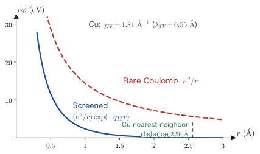
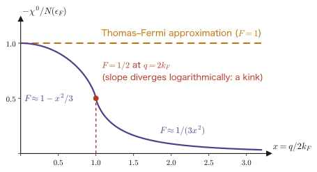
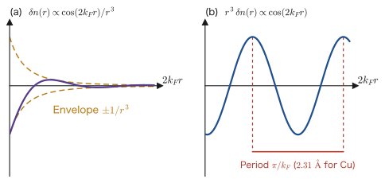
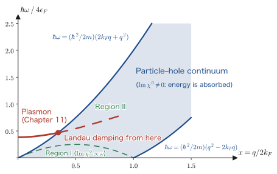

Chapter 10Screening — Thomas–Fermi and the Lindhard Function
Let us gently place one extra positive charge inside a metal. For example, in a copper crystal, if we replace one copper atom by a zinc atom, a positive charge one unit greater than that of copper is left there. In vacuum, the Coulomb potential created by this charge is $e/r$, which reaches out indefinitely. In a metal, however, the surrounding conduction electrons come crowding in and wrap up that positive charge, hiding it. Seen from a little distance, the positive charge seems no longer to be there. This is screening.
Screening is the most fundamental phenomenon for understanding the material called a metal. The electrons in a metal should be pushing one another with the strong, long-range Coulomb force $e^2/r$, yet experimentally they behave like “nearly free electrons.” It is screening that resolves this contradiction, and it is also the reason why Landau's Fermi-liquid theory holds.
In this chapter we calculate screening properly. The tools are already at hand: the Kubo formula of Chapter 7, the Lehmann representation of Chapter 8, the dielectric function $\epsilon(\qq,\omega)=1-v(q)\chi^0(\qq,\omega)$ of Chapter 9, and the residue theorem of Chapter 5. All that remains is to actually compute $\chi^0(\qq,\omega)$ for the free-electron gas—the Lindhard function.
This calculation is the one in linear response theory that you should “first carry through to the end with your own hands.” In Fetter–Walecka it is dispatched in a few lines, but in this chapter we write out the intermediate equations without skipping a single one. The function we obtain gives the screening length (Section 10.2), has a strange singularity at $q=2k_F$ (Section 10.4), fixes the particle–hole continuum, the stage of dissipation (Section 10.5), and then gives rise to the plasma oscillations of Chapter 11 (Section 10.6). So much physics comes out of a single function.
- Deriving the Lindhard function $\chi^0(\qq,\omega)$ by substituting the matrix elements of the density operator into the Lehmann representation
- Why the “difference” $n_\kk-n_{\kk+\qq}$ appears in the numerator (relabeling $\kk$ in the two terms)
- The static limit $\chi^0(\qq\to0,0)=-N(\epsilon_F)$ and the Thomas–Fermi screening length $q_{TF}^{-1}$
- Deriving the screened Coulomb (Yukawa-type) potential $\phi(r)=\dfrac{e}{r}\ee^{-q_{TF}r}$ with the residue theorem
- The complete form of the static Lindhard function, and the logarithmic non-analyticity at $q=2k_F$
- The origin of the Friedel oscillations $\delta n(r)\propto\cos(2k_Fr)/r^3$, and their relation to the RKKY interaction, the Kohn anomaly, and charge density waves
- The region where $\mathrm{Im}\,\chi^0\neq0$ = the particle–hole continuum, and a map of the $(q,\omega)$ plane
- The high-frequency limit $\chi^0\to nq^2/m\omega^2$ and its consistency with the $f$-sum rule, and a foretaste of plasma oscillations
10.1 Deriving the Lindhard Function $\chi^0(\qq,\omega)$ by Hand
10.1.1 What are we computing? — notation and conventions
Recall the setup of Chapter 9. We apply an electrostatic potential from outside to the electron gas. Writing $U_{\rm ext}(\xx,t)$ for the potential energy felt by a single electron, the perturbation Hamiltonian is
$$ \begin{equation} \hat{H}_{\rm ext}(t) = \int \dd^3x\; U_{\rm ext}(\xx,t)\, \hat{\rho}(\xx) \label{eq:10-Hext} \end{equation} $$where $\hat\rho(\xx)=\sum_\sigma\hat\psi^\dagger_\sigma(\xx)\hat\psi_\sigma(\xx)$ is the number-density operator (the sum over spin has been taken). We write the induced number density $\delta n$ in response to this, Fourier component by Fourier component, as
and call $\chi$ the density response function. Writing the Kubo formula of Chapter 7 out for this case, we obtain
$$ \begin{equation} \chi(\qq,\omega) = -\frac{\ii}{\hbar V}\int_0^{\infty}\dd t\; \ee^{\ii\omega t}\, \braket{\left[\hat\rho_{\qq}(t),\, \hat\rho_{-\qq}(0)\right]} \label{eq:10-kubo} \end{equation} $$where $V$ is the volume of the system and $\hat\rho_\qq$ is defined in Section 10.1.3. We write the result of computing this $\chi$ for the noninteracting free-electron gas as $\chi^0(\qq,\omega)$ and call it the Lindhard function. This is the subject of this chapter.
How to remember the sign, and the connection to Chapter 9
Remember the sign of Eq. \eqref{eq:10-chi-def} with “Apply a repulsive potential and the electrons flee.” If $U_{\rm ext}>0$ (uncomfortable for the electrons), then $\delta n<0$ (the electrons decrease), so the static $\chi$ is negative. Indeed, in Section 10.2 we obtain $\chi^0(\qq\to0,0)=-N(\epsilon_F)<0$.
In the RPA (random-phase approximation) of Chapter 9, the electrons respond not to the external potential but to the total potential $U_{\rm tot}$, which also includes the induced potential created by the other electrons: $\delta n=\chi^0 U_{\rm tot}$. Since the induced part is $U_{\rm ind}(\qq)=v(q)\,\delta n(\qq)$ with $v(q)=4\pi e^2/q^2$ (Gaussian units), we have
$$ U_{\rm tot}=U_{\rm ext}+v(q)\chi^0 U_{\rm tot} \quad\Longrightarrow\quad U_{\rm tot}=\frac{U_{\rm ext}}{1-v(q)\chi^0} $$That is, the dielectric function is $\epsilon(\qq,\omega)=1-v(q)\chi^0(\qq,\omega)$, and the RPA response function is $\chi^{\rm RPA}=\chi^0/\epsilon$. This agrees with the result of Chapter 9. Once we have found $\chi^0$ in this chapter, both $\epsilon$ and $\chi^{\rm RPA}$ are determined automatically.
10.1.2 Starting point: the Lehmann representation of Chapter 8
In Chapter 8 we showed that any retarded response function has a spectral (Lehmann) representation. Writing it out for the case of Eq. \eqref{eq:10-kubo}, at $T=0$, with ground state $\ket{0}$ (energy $E_0$) and complete set of states $\{\ket{n}\}$ (energies $E_n$), we have
Derivation: From Eq. \eqref{eq:10-kubo} to Eq. \eqref{eq:10-lehmann} (review of Chapter 8)
Step 1: Inserting a complete set of states. The operator in the Heisenberg picture is $\hat\rho_\qq(t)=\ee^{\ii\Ham t/\hbar}\hat\rho_\qq\ee^{-\ii\Ham t/\hbar}$. Inserting $1=\sum_n\ket{n}\bra{n}$ into the first term of the commutator gives
$$ \braket{0|\hat\rho_\qq(t)\hat\rho_{-\qq}(0)|0} =\sum_n \bra{0}\hat\rho_\qq\ket{n}\bra{n}\hat\rho_{-\qq}\ket{0}\;\ee^{\ii(E_0-E_n)t/\hbar} $$Here, using $\hat\rho_\qq^\dagger=\hat\rho_{-\qq}$ (because $\hat\rho(\xx)$ is Hermitian), we get $\bra{0}\hat\rho_\qq\ket{n}=\bra{n}\hat\rho_{-\qq}\ket{0}^{*}$, and the summand becomes $\abs{\bra{n}\hat\rho_{-\qq}\ket{0}}^2$.
Step 2: The second term in the same way.
$$ \braket{0|\hat\rho_{-\qq}(0)\hat\rho_{\qq}(t)|0} =\sum_n \bra{0}\hat\rho_{-\qq}\ket{n}\bra{n}\hat\rho_{\qq}\ket{0}\;\ee^{\ii(E_n-E_0)t/\hbar} =\sum_n\abs{\bra{n}\hat\rho_\qq\ket{0}}^2\ee^{\ii\omega_{n0}t} $$Here we have abbreviated $\omega_{n0}\equiv(E_n-E_0)/\hbar\ge0$.
Step 3: The time integral. Inserting $\eta\to0^+$ as a convergence factor, we obtain
$$ \int_0^{\infty}\dd t\;\ee^{\ii\omega t}\ee^{\mp\ii\omega_{n0}t}\ee^{-\eta t} =\left[\frac{\ee^{\ii(\omega\mp\omega_{n0}+\ii\eta)t}}{\ii(\omega\mp\omega_{n0}+\ii\eta)}\right]_0^\infty =\frac{\ii}{\omega\mp\omega_{n0}+\ii\eta} $$At the upper end, $\ee^{-\eta t}\to0$ takes effect and the term vanishes. This is the “$\ii\eta$ that respects causality.”
Step 4: Putting it together. The prefactor $-\ii/\hbar$ multiplies the $\ii$ just obtained to give $1/\hbar$. Pushing $\hbar$ into the bracket in the denominator, we obtain Eq. \eqref{eq:10-lehmann}. ∎
How to read Eq. \eqref{eq:10-lehmann}
This equation is the claim of Chapter 8 itself that “the poles of the response function tell us the excitation energies.” The first term diverges at $\hbar\omega=E_n-E_0$. In other words, when the frequency of the external force matches an excitation energy, the system responds violently (resonance). The second term has a pole at $\hbar\omega=-(E_n-E_0)$, which is the same resonance on the negative-frequency side (a reflection of $\chi(-\omega)=\chi(\omega)^*$, which we saw in Exercise 1.2 of Chapter 1).
Therefore, to find $\chi^0$ we only need to know the following two things. (i) Which intermediate states $\ket{n}$ appear in $\hat\rho_{\pm\qq}\ket{0}$. (ii) What their excitation energies are. For the free-electron gas, both can be answered by elementary means.
10.1.3 Writing the density operator with creation and annihilation operators
First we check the definition of $\hat\rho_\qq$. The Fourier component of the density operator is defined by
$$ \hat\rho_\qq \equiv \int\dd^3x\; \ee^{-\ii\qq\cdot\xx}\,\hat\rho(\xx) = \sum_\sigma\int\dd^3x\; \ee^{-\ii\qq\cdot\xx}\,\hat\psi^\dagger_\sigma(\xx)\hat\psi_\sigma(\xx) $$We expand the field operator in plane waves ($\sigma$ is the spin, $V$ is the volume, and we use periodic boundary conditions):
$$ \hat\psi_\sigma(\xx)=\frac{1}{\sqrt{V}}\sum_{\kk}\ee^{\ii\kk\cdot\xx}\hat c_{\kk\sigma} $$Derivation: The second-quantized representation of $\hat\rho_\qq$
Substituting and carrying out the $\xx$ integral, we obtain
$$ \hat\rho_\qq=\frac{1}{V}\sum_{\kk\kk'\sigma}\hat c^\dagger_{\kk\sigma}\hat c_{\kk'\sigma} \int\dd^3x\;\ee^{-\ii\qq\cdot\xx}\ee^{-\ii\kk\cdot\xx}\ee^{\ii\kk'\cdot\xx} $$The $\xx$ integral is $\displaystyle\int\dd^3x\,\ee^{\ii(\kk'-\kk-\qq)\cdot\xx}=V\,\delta_{\kk',\kk+\qq}$ (orthogonality of plane waves under periodic boundary conditions). The factors of $V$ cancel, giving
The second expression is simply the Hermitian conjugate of $\hat\rho_\qq$ (we have not relabeled the dummy indices). ∎
$\hat\rho_{-\qq}$ is “the operator that pours momentum $\hbar\qq$ into the system”
The $\hat c^\dagger_{\kk+\qq}\hat c_\kk$ in Eq. \eqref{eq:10-rho-q} is the operation “annihilate an electron of momentum $\hbar\kk$ and create an electron of momentum $\hbar(\kk+\qq)$.” The net momentum has increased by $\hbar\qq$.
The spatial variation of the external potential (a stripe pattern of wave vector $\qq$) gives the electrons a momentum kick of $\hbar\qq$—this is the physics contained in this one line.
10.1.4 The intermediate states are particle–hole pairs — there is only one kind
The ground state of the free-electron gas is the Fermi sphere $\ket{FS}$. We write the occupation numbers, at $T=0$, as
$$ n_\kk=\theta(k_F-k)= \begin{cases}1 & (k<k_F)\\ 0 & (k>k_F)\end{cases}, \qquad \epsilon_\kk=\frac{\hbar^2k^2}{2m} $$Acting with $\hat\rho_{-\qq}$ on $\ket{FS}$ gives
$$ \hat\rho_{-\qq}\ket{FS}=\sum_{\kk\sigma}\hat c^\dagger_{\kk+\qq,\sigma}\hat c_{\kk\sigma}\ket{FS} $$The condition for each term to survive is clear. For $\hat c_{\kk\sigma}$ to act, $\kk$ must be occupied ($n_\kk=1$). For $\hat c^\dagger_{\kk+\qq,\sigma}$ to act, $\kk+\qq$ must be empty ($n_{\kk+\qq}=0$). That is, the intermediate states are
This is a particle–hole pair. It is the state in which one vacancy (the hole) is made inside the Fermi sphere and one electron (the particle) is placed outside it. As long as $\qq\neq0$, no intermediate states other than these appear. The density excitations of the free-electron gas are nothing but particle–hole pairs.
Derivation: The matrix element is exactly 1
We check that the state of Eq. \eqref{eq:10-ph-state} is normalized. Using the anticommutation relation $\{\hat c_{\kk\sigma},\hat c^\dagger_{\kk'\sigma'}\}=\delta_{\kk\kk'}\delta_{\sigma\sigma'}$, we have
$$ \braket{\kk\qq\sigma|\kk\qq\sigma} =\bra{FS}\hat c^\dagger_{\kk\sigma}\hat c_{\kk+\qq,\sigma}\,\hat c^\dagger_{\kk+\qq,\sigma}\hat c_{\kk\sigma}\ket{FS} $$Using $\hat c_{\kk+\qq}\hat c^\dagger_{\kk+\qq}=1-\hat n_{\kk+\qq}$ for the middle pair, we get
$$ =\bra{FS}\hat c^\dagger_{\kk\sigma}(1-\hat n_{\kk+\qq,\sigma})\hat c_{\kk\sigma}\ket{FS} =n_\kk\,(1-n_{\kk+\qq}) $$This is $1$ for the allowed $(\kk,\sigma)$ and $0$ otherwise. In other words, the allowed pairs give states that are already normalized and orthogonal (different $(\kk,\sigma)$ have different occupation configurations, so they are mutually orthogonal).
Therefore the matrix element is
$$ \bra{\kk\qq\sigma}\hat\rho_{-\qq}\ket{FS} =\bra{\kk\qq\sigma}\sum_{\kk'\sigma'}\hat c^\dagger_{\kk'+\qq,\sigma'}\hat c_{\kk'\sigma'}\ket{FS}=1 $$This is because, of the sum, only the term with $(\kk',\sigma')=(\kk,\sigma)$ survives. The square of the matrix element is exactly equal to $n_\kk(1-n_{\kk+\qq})$. ∎
10.1.5 Substituting into the Lehmann representation — the first term
Into the first term of Eq. \eqref{eq:10-lehmann} we insert the matrix element and the excitation energy just obtained. The sum over $n$ becomes a sum over $(\kk,\sigma)$:
$$ (\text{first term})=\frac{1}{V}\sum_{\kk\sigma} \frac{n_\kk(1-n_{\kk+\qq})}{\hbar\omega-(\epsilon_{\kk+\qq}-\epsilon_\kk)+\ii\eta} =\frac{1}{V}\sum_{\kk\sigma} \frac{n_\kk(1-n_{\kk+\qq})}{\hbar\omega+\epsilon_\kk-\epsilon_{\kk+\qq}+\ii\eta} $$The last step merely removes the bracket in the denominator. Putting it in this form will pay off later.
10.1.6 The second term — where the relabeling of $\kk$ occurs
The second term contains $\hat\rho_{\qq}\ket{FS}$. As it stands in the first expression of Eq. \eqref{eq:10-rho-q}, it has the form $\hat c^\dagger_\kk\hat c_{\kk+\qq}$, so we relabel the dummy index by $\kk\to\kk-\qq$ and rewrite it as
$$ \hat\rho_\qq=\sum_{\kk\sigma}\hat c^\dagger_{\kk\sigma}\hat c_{\kk+\qq,\sigma} \;\xrightarrow{\;\kk\to\kk-\qq\;}\; \sum_{\kk\sigma}\hat c^\dagger_{\kk-\qq,\sigma}\hat c_{\kk\sigma} $$This is the “operator that pours in momentum $-\hbar\qq$.” The intermediate state is $\ket{n}=\hat c^\dagger_{\kk-\qq,\sigma}\hat c_{\kk\sigma}\ket{FS}$, the condition for it to survive is $n_\kk=1$ and $n_{\kk-\qq}=0$, and the excitation energy is $\epsilon_{\kk-\qq}-\epsilon_\kk$. Therefore
$$ (\text{second term})=-\frac{1}{V}\sum_{\kk\sigma} \frac{n_\kk(1-n_{\kk-\qq})}{\hbar\omega+(\epsilon_{\kk-\qq}-\epsilon_\kk)+\ii\eta} $$Now we relabel the dummy index once more. This time we take $\kk\to\kk+\qq$ (since the sum runs over all $\kk$, we are free to relabel):
$$ (\text{second term})=-\frac{1}{V}\sum_{\kk\sigma} \frac{n_{\kk+\qq}(1-n_{\kk})}{\hbar\omega+\epsilon_{\kk}-\epsilon_{\kk+\qq}+\ii\eta} $$Why relabel twice?
There is only one aim: to give the denominators of the first and second terms the same form. The denominator of the first term is $\hbar\omega+\epsilon_\kk-\epsilon_{\kk+\qq}+\ii\eta$, and the denominator of the second term has also become exactly the same after the relabeling. Once the denominators agree, we can add and subtract the numerators alone.
This operation of “matching the denominators by relabeling the indices” appears dozens of times in many-body calculations. It pays to get used to it. We use the same trick in Sections 10.3 and 10.6.
10.1.7 Combining the numerators — the appearance of $n_\kk-n_{\kk+\qq}$
We add the two terms. Since the denominator is common, we only need to compute the numerator:
$$ n_\kk(1-n_{\kk+\qq})-n_{\kk+\qq}(1-n_\kk) = n_\kk - \underbrace{n_\kk n_{\kk+\qq}}_{\text{cancels}} - n_{\kk+\qq} + \underbrace{n_\kk n_{\kk+\qq}}_{\text{cancels}} = n_\kk-n_{\kk+\qq} $$The quadratic terms cancel out beautifully. Finally, we carry out the spin sum. Since neither $\epsilon_\kk$ nor $n_\kk$ depends on spin, $\sum_\sigma$ simply produces a factor of $2$. Collecting the above,
This is the Lindhard function. It was derived by J. Lindhard in 1954. Eq. \eqref{eq:10-lindhard} is the starting point for everything in this chapter.
Reading Eq. \eqref{eq:10-lindhard} in words
- Numerator $n_\kk-n_{\kk+\qq}$: Only the places where “$\kk$ is filled and $\kk+\qq$ is empty” contribute to the response. This is the crescent shape of Figure 10.1. The Pauli exclusion principle enters here.
- Denominator $\hbar\omega-(\epsilon_{\kk+\qq}-\epsilon_\kk)$: It diverges when the frequency $\omega$ of the external force matches the excitation energy of a particle–hole pair. This is resonance.
- $\ii\eta$: Causality. If we split the expression into real and imaginary parts with the Sokhotski–Plemelj formula of Chapter 5, the imaginary part (dissipation) appears (Section 10.5).
- Factor $2$: The spin degrees of freedom. If you forget it, the screening length is off by a factor of $\sqrt2$.
And the most important point: no interaction enters this expression at all. All that enters is the free-electron dispersion $\epsilon_\kk=\hbar^2k^2/2m$ and the Fermi distribution $n_\kk$. Nevertheless, merely combining it with $v(q)$ (the RPA) yields both screening and plasmons.
Notation Conventions — note that they differ from textbook to textbook
- Presence or absence of $1/V$: The $\chi^0$ of this book is a quantity per unit volume (an intensive variable). Some conventions omit $V$.
- Position of $\hbar$: Some conventions write the denominator as $\omega+(\epsilon_\kk-\epsilon_{\kk+\qq})/\hbar$. Then a factor $1/\hbar$ multiplies the whole expression. Always check the dimensions (the dimension of $\chi^0$ in this book is $[\text{energy}^{-1}\text{volume}^{-1}]$, that is, the same as that of the density of states).
- Symbol: Fetter–Walecka uses the polarization propagator $\Pi^0$ rather than $\chi^0$. Since the two differ by a constant factor, it is safest to calibrate with the sum rule.
- Sign: Some books define $\delta n=-\chi\,U$. In that case all the signs are reversed. It is safest to check each time with “under repulsion, electrons flee.”
10.2 The Static Limit and Thomas–Fermi Screening
10.2.1 The density of states appears at $\omega=0,\ q\to0$
First we take the simplest limit: $\omega=0$ (static) and $q\to0$ (long wavelength). Set $\omega=0$ in Eq. \eqref{eq:10-lindhard}:
$$ \chi^0(\qq,0)=\frac{2}{V}\sum_\kk\frac{n_\kk-n_{\kk+\qq}}{\epsilon_\kk-\epsilon_{\kk+\qq}} $$We have dropped $\ii\eta$. For $\qq\neq0$, in the terms where the denominator vanishes the numerator also vanishes, so no divergence appears.
Derivation: $\chi^0(\qq\to0,0)=-N(\epsilon_F)$
Step 1: Expanding the numerator and the denominator each to first order in $\qq$.
$$ n_{\kk+\qq}\simeq n_\kk+\qq\cdot\nabla_\kk n_\kk \quad\Longrightarrow\quad n_\kk-n_{\kk+\qq}\simeq -\,\qq\cdot\nabla_\kk n_\kk $$ $$ \epsilon_{\kk+\qq}\simeq \epsilon_\kk+\qq\cdot\nabla_\kk\epsilon_\kk \quad\Longrightarrow\quad \epsilon_\kk-\epsilon_{\kk+\qq}\simeq -\,\qq\cdot\nabla_\kk\epsilon_\kk $$Step 2: Taking the ratio. $n_\kk$ does not depend on $\kk$ directly but only through $\epsilon_\kk$ ($n_\kk=n(\epsilon_\kk)$). Therefore, by the chain rule,
$$ \nabla_\kk n_\kk=\frac{\dd n}{\dd\epsilon}\,\nabla_\kk\epsilon_\kk $$When this is substituted, $\qq\cdot\nabla_\kk\epsilon_\kk$ cancels completely between the numerator and the denominator:
$$ \frac{n_\kk-n_{\kk+\qq}}{\epsilon_\kk-\epsilon_{\kk+\qq}} \;\longrightarrow\; \frac{-\,\dfrac{\dd n}{\dd\epsilon}\,(\qq\cdot\nabla_\kk\epsilon_\kk)}{-\,(\qq\cdot\nabla_\kk\epsilon_\kk)} =\frac{\dd n}{\dd\epsilon_\kk} $$This is the crux. A quantity that depends on neither the direction nor the magnitude of $\qq$ remains. That is why the limit $q\to0$ exists independently of direction.
Step 3: Taking the derivative at $T=0$. Since $n(\epsilon)=\theta(\epsilon_F-\epsilon)$,
$$ \frac{\dd n}{\dd\epsilon}=-\delta(\epsilon-\epsilon_F) $$(The derivative of the step function is the delta function; see Appendix A. The sign is negative because the occupation number decreases as $\epsilon$ increases.)
Step 4: Carrying out the sum.
$$ \chi^0(\qq\to0,0)=\frac{2}{V}\sum_\kk\left(-\delta(\epsilon_\kk-\epsilon_F)\right) =-\underbrace{\frac{2}{V}\sum_\kk\delta(\epsilon_\kk-\epsilon_F)}_{\textstyle N(\epsilon_F)} $$∎ Here $N(\epsilon_F)$ is the density of states per unit volume at the Fermi level (including both spins).
Why the density of states? — the intuition
The static response measures “how much we can compress the electron gas.” To push electrons in, the only way is to squeeze them into the vacant seats right near the Fermi level (the interior is already full because of the exclusion principle). The more seats there are near the Fermi level (the larger the density of states), the easier it is to push electrons in, that is, the larger the response.
This is also a concrete example of the statement in Chapter 1, Section 1.5.2 that “the static susceptibility is a thermodynamic quantity.” In fact, the isothermal compressibility $\kappa_T$ of the electron gas becomes $\kappa_T=N(\epsilon_F)/n^2$ in the free-electron model, so we can write $\chi^0(0,0)=-n^2\kappa_T$ (in the second half of this chapter $\kappa$ is also used for the screening wave number, so we write the compressibility as $\kappa_T$ to distinguish the two). The response function and the thermodynamic quantity are now connected.
10.2.2 Computing the density of states explicitly
Derivation: $N(\epsilon_F)=\dfrac{mk_F}{\pi^2\hbar^2}=\dfrac{3n}{2\epsilon_F}$
We convert the sum into an integral. In a system of volume $V$, one state in $\kk$-space occupies a volume $(2\pi)^3/V$, so
$$ \frac{1}{V}\sum_\kk \;\longrightarrow\; \int\frac{\dd^3k}{(2\pi)^3} $$Hence
$$ N(\epsilon_F)=2\int\frac{\dd^3k}{(2\pi)^3}\,\delta(\epsilon_\kk-\epsilon_F) =\frac{2}{(2\pi)^3}\cdot4\pi\int_0^\infty k^2\,\dd k\;\delta\!\left(\frac{\hbar^2k^2}{2m}-\epsilon_F\right) $$Differentiating the argument of the delta function with respect to $k$ gives $\hbar^2k/m$, so $\delta(\cdots)=\dfrac{m}{\hbar^2k_F}\delta(k-k_F)$. Therefore
$$ N(\epsilon_F)=\frac{8\pi}{8\pi^3}\cdot k_F^2\cdot\frac{m}{\hbar^2k_F} =\frac{mk_F}{\pi^2\hbar^2} $$We now rewrite this in terms of the electron density $n$ and the Fermi energy $\epsilon_F$. Using $n=k_F^3/3\pi^2$ and $\epsilon_F=\hbar^2k_F^2/2m$, we obtain
$$ \frac{3n}{2\epsilon_F}=\frac{3}{2}\cdot\frac{k_F^3}{3\pi^2}\cdot\frac{2m}{\hbar^2k_F^2}=\frac{mk_F}{\pi^2\hbar^2} $$∎ The form “$3n/2\epsilon_F$” is convenient to remember.
10.2.3 The Thomas–Fermi dielectric function
Into the RPA expression of Section 10.1.1 we substitute the $\chi^0(\qq\to0,0)=-N(\epsilon_F)$ just obtained. Since the Fourier transform of the Coulomb interaction is $v(q)=4\pi e^2/q^2$ (Gaussian units), we have
$$ \epsilon(q,0)=1-v(q)\chi^0(q,0)=1+\frac{4\pi e^2}{q^2}N(\epsilon_F) $$We call $q_{TF}$ the Thomas–Fermi wave number and its reciprocal $\lambda_{TF}=1/q_{TF}$ the Thomas–Fermi screening length. The last equality is obtained by inserting $N(\epsilon_F)=3n/2\epsilon_F$ from Eq. \eqref{eq:10-dos} to get $4\pi e^2\cdot\frac{3n}{2\epsilon_F}=\frac{6\pi ne^2}{\epsilon_F}$.
Alternative Expression: $q_{TF}^2=4k_F/\pi a_0$
Using the Bohr radius $a_0=\hbar^2/me^2$, from Eq. \eqref{eq:10-dos} we obtain
$$ q_{TF}^2=4\pi e^2\cdot\frac{mk_F}{\pi^2\hbar^2}=\frac{4e^2mk_F}{\pi\hbar^2}=\frac{4k_F}{\pi a_0} $$which is an easily remembered form. Since $q_{TF}/2k_F=\sqrt{1/(\pi a_0 k_F)}$, the higher the density (the larger $k_F$), the smaller $q_{TF}/2k_F$ is, and the screening becomes “relatively weak.” In metals, roughly $q_{TF}\sim k_F$.
Looking at $\epsilon(q,0)=1+q_{TF}^2/q^2$
This expression diverges as $q\to0$. It means that “a long-wavelength (that is, slowly varying in space) potential is screened arbitrarily strongly.” Conversely, for $q\to\infty$ (that is, extremely rapid spatial variation), $\epsilon\to1$; in other words, the potential is not screened.
Intuitively, if the potential varies slowly, the electrons can move leisurely and cancel it completely. But the electrons cannot follow structure finer than a single atom. The boundary is $q\sim q_{TF}$.
10.2.4 To real space — obtaining the Yukawa-type potential with the residue theorem
We place a point charge $+e$ (for example, the extra charge of an impurity ion) at the origin. The potential in vacuum is $\phi_{\rm ext}(r)=e/r$, and its Fourier transform is $\phi_{\rm ext}(\qq)=4\pi e/q^2$. In a metal the potential is divided by the dielectric function, so
$$ \phi(\qq)=\frac{\phi_{\rm ext}(\qq)}{\epsilon(q,0)} =\frac{4\pi e/q^2}{1+q_{TF}^2/q^2} =\frac{4\pi e}{q^2+q_{TF}^2} $$This is remarkably simple. All that remains is to transform it back to real space. Here the residue theorem of Chapter 5 comes into play.
Derivation: The screened Coulomb potential $\phi(r)=\dfrac{e}{r}\ee^{-q_{TF}r}$
Step 1: Writing down the three-dimensional inverse Fourier transform. With the convention of this book (Appendix A),
$$ \phi(\xx)=\int\frac{\dd^3q}{(2\pi)^3}\;\phi(\qq)\,\ee^{\ii\qq\cdot\xx} =\frac{1}{(2\pi)^3}\int\dd^3q\;\frac{4\pi e}{q^2+q_{TF}^2}\,\ee^{\ii\qq\cdot\xx} $$Step 2: Carrying out the angular integral. Use polar coordinates for $\qq$ with $\xx$ taken as the polar axis, so that $\dd^3q=q^2\dd q\,\dd\Omega$ and $\qq\cdot\xx=qr\cos\theta$. Setting $u=\cos\theta$, we get
$$ \int\dd\Omega\;\ee^{\ii qr\cos\theta} =2\pi\int_{-1}^{1}\dd u\;\ee^{\ii qru} =2\pi\cdot\frac{\ee^{\ii qr}-\ee^{-\ii qr}}{\ii qr} =2\pi\cdot\frac{2\sin qr}{qr}=\frac{4\pi\sin qr}{qr} $$Step 3: Simplifying the remaining radial integral.
$$ \phi(r)=\frac{4\pi e}{8\pi^3}\int_0^\infty q^2\dd q\;\frac{1}{q^2+q_{TF}^2}\cdot\frac{4\pi\sin qr}{qr} =\frac{2e}{\pi r}\int_0^\infty\dd q\;\frac{q\sin qr}{q^2+q_{TF}^2} $$(Coefficient: $\dfrac{4\pi e\cdot4\pi}{8\pi^3 r}=\dfrac{16\pi^2e}{8\pi^3r}=\dfrac{2e}{\pi r}$. The factor $q^2/q=q$ is left in the numerator.)
Step 4: Making the integrand even, so that the integral runs over the whole real axis. The integrand $\dfrac{q\sin qr}{q^2+q_{TF}^2}$ is invariant under $q\to-q$ (the numerator is odd × odd = even). Therefore
$$ I\equiv\int_0^\infty\dd q\;\frac{q\sin qr}{q^2+q_{TF}^2} =\frac{1}{2}\int_{-\infty}^{\infty}\dd q\;\frac{q\sin qr}{q^2+q_{TF}^2} =\frac{1}{2}\,\mathrm{Im}\int_{-\infty}^{\infty}\dd q\;\frac{q\,\ee^{\ii qr}}{q^2+q_{TF}^2} $$(We used $\sin qr=\mathrm{Im}\,\ee^{\ii qr}$. The part corresponding to $\cos$ is an odd function, so it drops out of the integral over the whole real axis.)
Step 5: Closing the contour in the complex plane. Since $r>0$, we have $\abs{\ee^{\ii qr}}=\ee^{-r\,\mathrm{Im}\,q}\to0$ in the upper half-plane. By Jordan's lemma (Chapter 5), the contribution of the large semicircle in the upper half-plane vanishes. The poles of the integrand are given by
$$ q^2+q_{TF}^2=0\quad\Longrightarrow\quad q=\pm\ii q_{TF} $$Only one of them, $q=+\ii q_{TF}$, lies in the upper half-plane.
Step 6: Computing the residue. Factoring $q^2+q_{TF}^2=(q-\ii q_{TF})(q+\ii q_{TF})$, we obtain
$$ \Res_{q=\ii q_{TF}}\frac{q\,\ee^{\ii qr}}{(q-\ii q_{TF})(q+\ii q_{TF})} =\frac{(\ii q_{TF})\,\ee^{\ii(\ii q_{TF})r}}{2\ii q_{TF}} =\frac{\ee^{-q_{TF}r}}{2} $$Step 7: Applying the residue theorem. Since we closed the contour counterclockwise,
$$ \int_{-\infty}^{\infty}\dd q\;\frac{q\ee^{\ii qr}}{q^2+q_{TF}^2}=2\pi\ii\cdot\frac{\ee^{-q_{TF}r}}{2}=\ii\pi\ee^{-q_{TF}r} $$Taking the imaginary part, we get $I=\dfrac12\cdot\pi\ee^{-q_{TF}r}=\dfrac{\pi}{2}\ee^{-q_{TF}r}$.
Step 8: Substituting.
∎ This is the screened Coulomb potential, or the Yukawa-type potential. We can also confirm that setting $q_{TF}\to0$ (no screening) returns $e/r$.
10.2.5 Putting in numbers — the screening length of copper is 0.55 Å
Example 10.1: The Thomas–Fermi screening length of copper (Cu)
Copper contributes one conduction electron per atom, and its electron density is $n=8.47\times10^{22}\ \mathrm{cm^{-3}}=0.0847\ \mathrm{\mathring{A}^{-3}}$. Find $q_{TF}$ and the screening length. In Gaussian units you may use $e^2=14.40\ \mathrm{eV\cdot\mathring{A}}$ and $\hbar^2/2m=3.810\ \mathrm{eV\cdot\mathring{A}^2}$.
Solution. First the Fermi wave number:
$$ k_F=(3\pi^2 n)^{1/3}=(29.61\times0.0847)^{1/3}\ \mathrm{\mathring{A}^{-1}} =(2.508)^{1/3}=1.359\ \mathrm{\mathring{A}^{-1}} $$The Fermi energy:
$$ \epsilon_F=\frac{\hbar^2k_F^2}{2m}=3.810\times(1.359)^2=3.810\times1.847=7.04\ \mathrm{eV} $$(This agrees well with the experimental value $7.0\ \mathrm{eV}$.) From Eq. \eqref{eq:10-dos}, the density of states is
$$ N(\epsilon_F)=\frac{3n}{2\epsilon_F}=\frac{3\times0.0847}{2\times7.04}=0.01805\ \mathrm{\mathring{A}^{-3}eV^{-1}} $$From Eq. \eqref{eq:10-eps-tf}, the Thomas–Fermi wave number is
$$ q_{TF}^2=4\pi e^2N(\epsilon_F)=4\pi\times14.40\times0.01805=3.267\ \mathrm{\mathring{A}^{-2}} \;\Longrightarrow\; q_{TF}=1.81\ \mathrm{\mathring{A}^{-1}} $$∎ The nearest-neighbor distance in copper is $2.556\ \mathrm{\mathring{A}}$. The screening length is about $1/5$ of the interatomic distance. This is remarkable: the extra charge of an impurity is almost completely hidden before it can reach the neighboring atoms.
| Metal | $n\ (10^{22}\,\mathrm{cm^{-3}})$ | $k_F\ (\mathrm{\mathring{A}^{-1}})$ | $\epsilon_F\ (\mathrm{eV})$ | $q_{TF}\ (\mathrm{\mathring{A}^{-1}})$ | $\lambda_{TF}\ (\mathrm{\mathring{A}})$ | $q_{TF}/2k_F$ | $\hbar\omega_p\ (\mathrm{eV})$ |
|---|---|---|---|---|---|---|---|
| K | 1.40 | 0.746 | 2.12 | 1.34 | 0.75 | 0.90 | 4.4 |
| Na | 2.65 | 0.922 | 3.24 | 1.49 | 0.67 | 0.81 | 6.0 |
| Ag | 5.86 | 1.202 | 5.50 | 1.70 | 0.59 | 0.71 | 9.0 |
| Cu | 8.47 | 1.359 | 7.04 | 1.81 | 0.55 | 0.67 | 10.8 |
| Al | 18.1 | 1.750 | 11.7 | 2.05 | 0.49 | 0.59 | 15.8 |

How far is Thomas–Fermi correct?
The discussion so far is an approximation (the Thomas–Fermi approximation) in which $\chi^0(\qq,0)$ is replaced by its $q\to0$ value, $-N(\epsilon_F)$. Looking at Table 10.1, we see that $q_{TF}/2k_F$ is as large as $0.6$–$0.9$, so this can hardly be called $q\to0$. Therefore we cannot expect quantitative accuracy.
Even so, the conclusion that “the screening length is shorter than the interatomic distance” does not change. Note, however, that the numbers obtained by extrapolating the Yukawa-type form to interatomic distances ($1$–$3\ \mathrm{\mathring{A}}$), as in Figure 10.3, are no more than a rough guide to long-wavelength screening, not the exact asymptotic form at large distances. In fact, when we find the exact $q$ dependence of $\chi^0(q,0)$ in the next section (Section 10.3), a new phenomenon that never appears in the Thomas–Fermi approximation—Friedel oscillations—emerges, and the behavior at large distances is no longer a single exponential but is replaced by an oscillation of the $\cos(2k_Fr)/r^3$ type.
10.3 The Complete Form of the Static Lindhard Function
This time we make no $q\to0$ approximation: keeping $\omega=0$, we evaluate Eq. \eqref{eq:10-lindhard} for arbitrary $q$. We take $T=0$.
10.3.1 Combining the two terms into one
Derivation: Making the numerator just $n_\kk$
The starting point is
$$ \chi^0(q,0)=\frac{2}{V}\sum_\kk\frac{n_\kk-n_{\kk+\qq}}{\epsilon_\kk-\epsilon_{\kk+\qq}} =\underbrace{\frac{2}{V}\sum_\kk\frac{n_\kk}{\epsilon_\kk-\epsilon_{\kk+\qq}}}_{\rm (A)} -\underbrace{\frac{2}{V}\sum_\kk\frac{n_{\kk+\qq}}{\epsilon_\kk-\epsilon_{\kk+\qq}}}_{\rm (B)} $$In (B) let $\kk'=\kk+\qq$ (so $\kk=\kk'-\qq$). Since the sum runs over all $\kk$, $\kk'$ also runs over all of space:
$$ {\rm (B)}=\frac{2}{V}\sum_{\kk'}\frac{n_{\kk'}}{\epsilon_{\kk'-\qq}-\epsilon_{\kk'}} $$Next we replace $\kk'\to-\kk'$. Since both $\epsilon$ and $n$ are even functions ($\epsilon_{-\kk}=\epsilon_\kk$, $n_{-\kk}=n_\kk$),
$$ \epsilon_{-\kk'-\qq}-\epsilon_{-\kk'}=\epsilon_{\kk'+\qq}-\epsilon_{\kk'} $$ $$ {\rm (B)}=\frac{2}{V}\sum_{\kk}\frac{n_{\kk}}{\epsilon_{\kk+\qq}-\epsilon_{\kk}} =-\frac{2}{V}\sum_{\kk}\frac{n_{\kk}}{\epsilon_{\kk}-\epsilon_{\kk+\qq}}=-{\rm (A)} $$Therefore ${\rm (A)}-{\rm (B)}=2\,{\rm (A)}$, that is,
∎ Since the numerator is now just $n_\kk$, the $\kk$ integral is confined to the inside of the Fermi sphere. The calculation has become much easier.
10.3.2 Converting the sum to an integral and carrying out the angular integration
Derivation: The logarithm emerges from the angular integration
Step 1: Writing down the energy difference.
$$ \epsilon_\kk-\epsilon_{\kk+\qq}=\frac{\hbar^2}{2m}\left(k^2-\abs{\kk+\qq}^2\right) =-\frac{\hbar^2}{2m}\left(2\kk\cdot\qq+q^2\right) $$Step 2: Converting the sum to an integral. We use $\frac1V\sum_\kk\to\int\frac{\dd^3k}{(2\pi)^3}$ and let $n_\kk$ restrict the integration region to $k<k_F$:
$$ \chi^0(q,0)=-\frac{8m}{\hbar^2}\int_{k<k_F}\frac{\dd^3k}{(2\pi)^3}\;\frac{1}{2\kk\cdot\qq+q^2} $$Step 3: Switching to polar coordinates. Taking $\qq$ as the polar axis and letting $u=\cos\theta$, we have $\kk\cdot\qq=kqu$ and $\dd^3k=2\pi k^2\dd k\,\dd u$.
$$ \chi^0(q,0)=-\frac{8m}{\hbar^2}\cdot\frac{2\pi}{8\pi^3}\int_0^{k_F}k^2\dd k\int_{-1}^{1}\frac{\dd u}{2kqu+q^2} =-\frac{2m}{\pi^2\hbar^2}\int_0^{k_F}k^2\dd k\int_{-1}^{1}\frac{\dd u}{2kqu+q^2} $$(Coefficient: $\dfrac{8m}{\hbar^2}\cdot\dfrac{2\pi}{8\pi^3}=\dfrac{2m}{\pi^2\hbar^2}$.)
Step 4: The $u$ integral. This has the form $\displaystyle\int\frac{\dd u}{au+b}=\frac{1}{a}\ln\abs{au+b}$ (with $a=2kq$, $b=q^2$):
One caveat. For $k>q/2$ the denominator of the integrand vanishes at $u_0=-q/2k\in(-1,1)$, so the integral of this term taken by itself is singular. In the original form $n_\kk-n_{\kk+\qq}$ the numerator vanished at the same point, so the integrand was integrable; this singularity is therefore the price we paid for combining the two terms into one in Section 10.3.1. The value $\omega=0$ corresponds to taking the real part of the limit $\ii\eta\to0$, and that is nothing other than taking the Cauchy principal value. The logarithm with an absolute value below is precisely the value of that principal value.
$$ \int_{-1}^{1}\frac{\dd u}{2kqu+q^2} =\frac{1}{2kq}\Big[\ln\abs{2kqu+q^2}\Big]_{-1}^{1} =\frac{1}{2kq}\ln\abs{\frac{q^2+2kq}{q^2-2kq}} =\frac{1}{2kq}\ln\abs{\frac{q+2k}{q-2k}} $$The logarithm is born here. And when $k=q/2$ the denominator vanishes—this is the seed of the $q=2k_F$ singularity that comes later.
Step 5: Substituting and simplifying.
$$ \chi^0(q,0)=-\frac{2m}{\pi^2\hbar^2}\cdot\frac{1}{2q}\int_0^{k_F}k\,\dd k\;\ln\abs{\frac{2k+q}{2k-q}} =-\frac{m}{\pi^2\hbar^2 q}\,J, \qquad J\equiv\int_0^{k_F}k\,\ln\abs{\frac{2k+q}{2k-q}}\,\dd k $$∎ All that remains is the single-variable integral $J$.
10.3.3 The radial integral — settled by a single integration by parts
Derivation: Computing $J$
For readability, let $a\equiv q/2$. Since $\ln\abs{\dfrac{2k+q}{2k-q}}=\ln\abs{\dfrac{k+a}{k-a}}$,
$$ J=\int_0^{k_F}k\,\ln\abs{\frac{k+a}{k-a}}\,\dd k $$Step 1: Preparing the integration by parts. Let $u=\ln\abs{\dfrac{k+a}{k-a}}$ and $\dd v=k\,\dd k$. Here we choose the integration constant of $v$ deliberately as $v=\dfrac{k^2-a^2}{2}$ (we have added $-a^2/2$). This makes the calculation dramatically simpler.
Step 2: The derivative of $u$.
$$ \frac{\dd u}{\dd k}=\frac{1}{k+a}-\frac{1}{k-a}=\frac{(k-a)-(k+a)}{(k+a)(k-a)}=\frac{-2a}{k^2-a^2} $$Step 3: Carrying out the integration by parts.
$$ J=\left[\frac{k^2-a^2}{2}\ln\abs{\frac{k+a}{k-a}}\right]_0^{k_F} -\int_0^{k_F}\frac{k^2-a^2}{2}\cdot\frac{-2a}{k^2-a^2}\,\dd k $$In the integrand of the second term, $k^2-a^2$ cancels neatly (choosing the constant of $v$ paid off):
$$ -\int_0^{k_F}\frac{k^2-a^2}{2}\cdot\frac{-2a}{k^2-a^2}\dd k=+a\int_0^{k_F}\dd k=a\,k_F $$Step 4: The boundary term. At $k=0$ we have $\dfrac{0-a^2}{2}\ln\abs{\dfrac{a}{-a}}=-\dfrac{a^2}{2}\ln1=0$. Only the term at $k=k_F$ remains, giving
$$ J=\frac{k_F^2-a^2}{2}\ln\abs{\frac{k_F+a}{k_F-a}}+a\,k_F $$Step 5: Making it dimensionless. Here we define
With this definition,
$$ J=\frac{k_F^2(1-x^2)}{2}\ln\abs{\frac{1+x}{1-x}}+x\,k_F^2 $$Step 6: Returning to $\chi^0$. Using $q=2xk_F$,
$$ \chi^0(q,0)=-\frac{m}{\pi^2\hbar^2\cdot 2xk_F}\,k_F^2\left[\frac{1-x^2}{2}\ln\abs{\frac{1+x}{1-x}}+x\right] =-\frac{mk_F}{\pi^2\hbar^2}\left[\frac{1-x^2}{4x}\ln\abs{\frac{1+x}{1-x}}+\frac12\right] $$Since $mk_F/\pi^2\hbar^2=N(\epsilon_F)$ (Eq. \eqref{eq:10-dos}), the final result is
∎ We call this $F(x)$ the dimensionless form of the static Lindhard function. It differs by a factor of $-N(\epsilon_F)$ from $\chi^0(q,0)$ itself (the “static Lindhard function” in the title of Section 10.3), so please do not confuse the two.
10.3.4 Checking the limits
Derivation: $F\to1$ as $x\to0$ and $F\to1/3x^2$ as $x\to\infty$
(i) $x\to0$. We use $\ln\dfrac{1+x}{1-x}=2\left(x+\dfrac{x^3}{3}+\cdots\right)$:
$$ \frac{1-x^2}{4x}\cdot 2\left(x+\frac{x^3}{3}\right) =\frac{1-x^2}{2}\left(1+\frac{x^2}{3}\right) =\frac12\left(1+\frac{x^2}{3}-x^2+O(x^4)\right) =\frac12-\frac{x^2}{3}+O(x^4) $$ $$ \Longrightarrow\quad F(x)=1-\frac{x^2}{3}+O(x^4) $$Indeed $F(0)=1$, that is, $\chi^0(0,0)=-N(\epsilon_F)$, which reproduces the result of Section 10.2. The check is complete.
(ii) $x\to\infty$. Here $\ln\abs{\dfrac{1+x}{1-x}}=\ln\dfrac{x+1}{x-1}=2\left(\dfrac1x+\dfrac{1}{3x^3}+\cdots\right)$:
$$ \frac{1-x^2}{4x}\cdot\frac{2}{x}\left(1+\frac{1}{3x^2}\right) =\frac{1-x^2}{2x^2}\left(1+\frac{1}{3x^2}\right) =-\frac12+\frac{1}{2x^2}-\frac{1}{6x^2}+O(x^{-4}) =-\frac12+\frac{1}{3x^2} $$ $$ \Longrightarrow\quad F(x)\simeq\frac{1}{3x^2}=\frac{4k_F^2}{3q^2} $$The two $1/2$ terms cancel each other, and $F\to0$. Physically, this says that “electrons cannot follow spatial structure that is too fine, so the response is zero.” ∎
(iii) $x=1$ ($q=2k_F$). Since $1-x^2=0$, the divergence of the logarithm is suppressed and $F(1)=\dfrac12$ exactly. The value is finite, but as we will see in the next section, the derivative diverges.

10.4 The Non-Analyticity at $q=2k_F$ and Friedel Oscillations
10.4.1 Why is $q=2k_F$ special?
The geometric meaning of $q=2k_F$
What is the largest momentum transfer with which we can move an electron without spending any energy (at $\omega=0$)? We need only consider moving an electron from a point $\kk$ on the Fermi surface ($k=k_F$) to another point $\kk+\qq$ on the Fermi surface ($\abs{\kk+\qq}=k_F$). Since both points lie on the Fermi surface, the maximum value of $q$ is the diameter, that is, $q=2k_F$.
For $q<2k_F$, there is always some pair of points on the Fermi surface that are “shifted by $\qq$ without changing the energy.” For $q>2k_F$ no such pair exists any longer. $q=2k_F$ is the boundary between the two.
In terms of Figure 10.1, $q=2k_F$ is the moment at which the overlap of the two spheres disappears. Since the way the response is “built” changes qualitatively there, it is natural that the function ceases to be smooth at that point.
Derivation: Logarithmic divergence of the slope at $x=1$
Let $x=1+\delta$ ($\abs{\delta}\ll1$) and expand $F(x)$.
Step 1: Expanding each factor.
$$ 1-x^2=1-(1+\delta)^2=-2\delta-\delta^2\simeq-2\delta $$ $$ \frac{1+x}{1-x}=\frac{2+\delta}{-\delta}\quad\Longrightarrow\quad \ln\abs{\frac{1+x}{1-x}}\simeq\ln\frac{2}{\abs{\delta}} $$ $$ \frac{1}{4x}=\frac{1}{4(1+\delta)}\simeq\frac14 $$Step 2: Multiplying them together.
$$ F(1+\delta)\simeq\frac12+\frac{-2\delta}{4}\ln\frac{2}{\abs\delta} =\frac12-\frac{\delta}{2}\ln\frac{2}{\abs\delta} =\frac12+\frac{\delta}{2}\ln\frac{\abs\delta}{2} $$Step 3: Differentiating.
$$ \frac{\dd F}{\dd x}=\frac{\dd F}{\dd\delta}\simeq\frac12\ln\frac{\abs\delta}{2}+\frac12 \;\xrightarrow{\ \delta\to0\ }\;-\infty $$∎ The value itself is continuous, but the slope diverges logarithmically. This is a non-analyticity of the $\delta\ln\abs\delta$ type. A Taylor expansion is impossible; that is, the function is not analytic at $x=1$.
10.4.2 The non-analyticity produces oscillations in real space
A “cusp in $k$ space” means “oscillations at large distances in real space”
This is a general property of the Fourier transform.
- If $f(q)$ is analytic in some strip containing the real axis, then $f(r)$ decays exponentially fast at large distances. The decay rate is determined by the distance from the real axis to the nearest complex singularity. The Thomas–Fermi form $1/(q^2+q_{TF}^2)$ has poles only at $q=\pm\ii q_{TF}$ and is analytic in the strip $\abs{\mathrm{Im}\,q}<q_{TF}$, and in real space it became exactly $\ee^{-q_{TF}r}$ (Section 10.2.4).
Being infinitely differentiable on the real axis (being $C^\infty$) alone does not yield this conclusion. All that can be said then is that the function decays faster than any power; to say that the decay is exponential, we need analytic continuation into the complex plane. Conversely, if the function can be differentiated only finitely many times on the real axis, the decay at large distances is power-law, and its exponent is determined by the number of times the function is differentiable. - If $f(q)$ is non-analytic at some $q_0$, then $f(r)$ oscillates as $\cos(q_0 r)$ at large distances while decaying as a power law.
A familiar relative of this is the Gibbs phenomenon that arises when a square wave is expressed as a Fourier series. A cusp (discontinuity) of a function corresponds to a long, trailing oscillation in the conjugate space. The “sharp edge” of the Fermi sphere (the step function at $T=0$) produces the $2k_F$ oscillation in real space.
Derivation: $\delta n(r)\propto\dfrac{\cos(2k_Fr)}{r^3}$
Step 1: Preparing the formula that takes us back to real space. The induced density is $\delta n(\qq)=\chi^{\rm RPA}(q,0)\,U_{\rm ext}(\qq)$. Carrying out the same angular integration as in Section 10.2.4, we obtain
$$ \delta n(r)=\int\frac{\dd^3q}{(2\pi)^3}\delta n(\qq)\ee^{\ii\qq\cdot\xx} =\frac{1}{2\pi^2 r}\int_0^\infty \dd q\;q\,\sin(qr)\;\delta n(q) $$Step 2: Which region dominates at large distances? When $r$ is large, $\sin(qr)$ oscillates rapidly, and the contributions from the smooth part of $\delta n(q)$ cancel one another and vanish quickly (the Riemann–Lebesgue lemma). Only the neighborhood of the non-analytic point $q=2k_F$ survives.
Step 3: Extracting the singular part. From Eq. \eqref{eq:10-2kf-sing}, with $s\equiv q-2k_F$, there is a term of the form
$$ \delta n(q)\Big|_{\rm sing}=C\,s\,\ln\abs{s} $$($C$ is a constant that collects the smooth factors at $q=2k_F$).
Step 4: The Fourier transform of this form. The Fourier transform of $\ln\abs s$ is $-\pi/\abs r$ (apart from a delta-function term). Multiplication by $s$ corresponds to $-\ii\,\dd/\dd r$, so for $r>0$
$$ \int_{-\infty}^{\infty}\dd s\;s\ln\abs{s}\;\ee^{\ii sr} =-\ii\frac{\dd}{\dd r}\left(-\frac{\pi}{r}\right)=-\frac{\ii\pi}{r^2} $$Step 5: Assembling the result. Using $q\simeq2k_F$ and $\sin(qr)=\mathrm{Im}\,\ee^{\ii qr}=\mathrm{Im}\left(\ee^{\ii2k_Fr}\ee^{\ii sr}\right)$, we obtain
$$ \int_0^\infty\dd q\;q\sin(qr)\,\delta n(q)\Big|_{\rm sing} \simeq 2k_F\,C\;\mathrm{Im}\left[\ee^{\ii2k_Fr}\left(-\frac{\ii\pi}{r^2}\right)\right] =-\frac{2\pi k_F C}{r^2}\cos(2k_Fr) $$Putting this back into Step 1, where it is multiplied by $1/r$, we obtain
∎ These are the Friedel oscillations (J. Friedel, 1952). The coefficient $A$ of the amplitude depends on the charge of the impurity and on how the screening is treated (RPA or the phase-shift method), but the form $\cos(2k_Fr)/r^3$ is universal.

Phenomena caused by Friedel oscillations
- RKKY interaction: When the spin of a magnetic impurity polarizes the conduction electrons, that polarization also oscillates with the same $2k_F$ oscillation. Between two magnetic impurities separated by a distance $R$, an exchange interaction $J(R)\propto\cos(2k_FR)/R^3$ acts. Since its sign oscillates with distance, it can be either ferromagnetic or antiferromagnetic. This is the origin of the spin glass in dilute magnetic alloys.
- Kohn anomaly: Since the vibrations of the ions are screened by the conduction electrons, the phonon frequency is renormalized from its bare value $\Omega_q$. Writing the electron–phonon coupling as $g_q$, the renormalization due to the lowest-order phonon self-energy can be written in the following form: $$ \widetilde\Omega_q^{\,2}=\Omega_q^2+C\abs{g_q}^2\chi^0(q,0),\qquad C>0 $$ In the convention of this book, $\chi^0(q,0)<0$, so the second term is negative, and the electrons indeed act in the direction that softens the phonon. Because the derivative of $\chi^0$ diverges at $q=2k_F$, the dispersion of $\widetilde\Omega_q$ has a sharp kink at $q=2k_F$. This is actually observed in inelastic neutron scattering, and it underlies the astonishing fact that the shape of the Fermi surface can be learned from phonon measurements. (The concrete form of the coefficient $C$ depends on the convention used to define the phonon Green's function, so only the sign is essential here.)
- Charge density waves (CDW) and the Peierls transition: In one-dimensional systems, $\chi^0(2k_F,0)$ itself diverges logarithmically (Exercise 10.2). In the phonon-softening formula above, the $q=2k_F$ term then acts without limit, and $\widetilde\Omega_{2k_F}\to0$. When the phonon softens completely, the lattice distorts spontaneously with the periodicity $2k_F$ (in real space, $\pi/k_F$), a gap opens at the Fermi surface, and the energy of the electron system is lowered. The metal becomes an insulator—this is the Peierls transition, and the periodic charge modulation that arises at that time is the charge density wave. The dimerization of polyacetylene and the CDWs of quasi-one-dimensional materials such as $\mathrm{NbSe}_3$ are examples of this.
Caution on the sign: This instability is not “the static dielectric function becoming zero.” In the convention of this book, the Coulomb repulsion is $v_q>0$ and $\chi^0(q,0)<0$, so $$ \epsilon(q,0)=1-v_q\chi^0(q,0)=1+v_q\abs{\chi^0(q,0)}>1 $$ and even if $\chi^0(2k_F,0)$ diverges to negative infinity, $\epsilon$ merely becomes larger and never becomes zero. What becomes unstable is not the electron system itself but the lattice, which softens through the electron–phonon coupling. - Seen with STM: When one looks around impurities or steps on a metal surface with a scanning tunneling microscope, ripples in the electron density with period $\pi/k_F$ are actually seen. Friedel oscillations are a phenomenon that can be captured as an image.
RKKY interaction, the Kohn anomaly, and the Peierls transition are all children of one and the same fact
All three come from the single fact that the static Lindhard function becomes non-analytic at $q=2k_F$. The only difference is “what picks up that non-analyticity.”
- If an impurity charge picks it up, we get the Friedel oscillations of the screening charge, $\cos(2k_Fr)/r^3$.
- If localized spins pick it up, we get the RKKY interaction $\cos(2k_FR)/R^3$ through the spin susceptibility.
- If the lattice (phonons) picks it up, we get the bend in $\widetilde\Omega_q$, that is, the Kohn anomaly.
- If that bend deepens until $\widetilde\Omega_{2k_F}$ drops to zero, we get the Peierls transition and the CDW.
In other words, the Kohn anomaly and the Peierls transition are not separate things but the weak case and the limiting case of the same phonon softening. The lower the dimension and the stronger the singularity (Table 10.2), the deeper the softening.
How true is “a one-dimensional metal always undergoes a transition, however weak the coupling”?
The argument for the Peierls instability above holds literally only when all the conditions are met: an ideal one-dimensional band, perfect nesting, the mean-field approximation, and $T\to0$. In real materials the following effects greatly modify the conclusion.
- Finite temperature: The logarithmic divergence of $\chi^0_{\rm 1D}(2k_F,0)$ is cut off by the temperature and saturates at about $\ln(\epsilon_F/k_BT)$. As a result, the transition temperature becomes an exponentially small quantity, $k_BT_P\sim\epsilon_F\ee^{-1/\lambda}$ ($\lambda$ is the dimensionless electron–phonon coupling constant), and if the coupling is weak it is experimentally indistinguishable from zero.
- Interchain coupling and imperfect nesting: Real quasi-one-dimensional materials have hopping between chains, and the Fermi surface is not a perfect plane. When the nesting is off, the $2k_F$ singularity is blunted, and the divergence turns into a peak of finite height.
- Fluctuations: In a strictly one-dimensional system, thermal and quantum fluctuations prevent true long-range order at finite temperature, and the mean-field approximation itself breaks down. The CDW transitions that are actually observed occur only when interchain coupling makes three-dimensional order possible. In a wide temperature range above $T_P$, a pseudogap region appears in which only fluctuations of the order are seen.
- Finite size: In a short chain, the allowed $q$ are discrete, and a wave number of exactly $2k_F$ does not necessarily exist.
Therefore, “a transition always occurs even with weak coupling” should be taken as a claim of idealized mean-field theory, and whether a CDW is actually seen in a real material is decided by the balance of the effects above.
| Dimension | Form of $\chi^0(q,0)$ | Behavior at $q=2k_F$ | Consequence |
|---|---|---|---|
| One dimension | $-\dfrac{2m}{\pi\hbar^2q}\ln\abs{\dfrac{q+2k_F}{q-2k_F}}$ | $\chi^0$ itself diverges logarithmically | Complete softening of the $2k_F$ phonon → Peierls transition (for an ideal one-dimensional system, perfect nesting, mean field, and $T\to0$) |
| Two dimensions | $-N_{2D}\left[1-\theta(q-2k_F)\sqrt{1-(2k_F/q)^2}\right]$ | $\chi^0$ itself is continuous, but there is a cusp of $\sqrt{q-2k_F}$ type (the first derivative diverges as $(q-2k_F)^{-1/2}$ for $q\to2k_F^{+}$) | Strong nesting effects |
| Three dimensions | Eq. \eqref{eq:10-lindhard-static} | The first derivative diverges logarithmically | Friedel oscillations, Kohn anomaly |
10.5 The Dynamic Case — The Particle–Hole Continuum
10.5.1 Separating the real and imaginary parts
We return to $\omega\neq0$. Applying to Eq. \eqref{eq:10-lindhard} the Sokhotski–Plemelj formula of Chapter 5,
$$ \frac{1}{X+\ii\eta}=\PV\frac{1}{X}-\ii\pi\delta(X)\qquad(\eta\to0^+) $$we find that the real and imaginary parts separate. The imaginary part is
What does $\mathrm{Im}\,\chi^0\neq0$ mean?
As we saw in Chapter 3, $\mathrm{Im}\,\chi$ represents energy dissipation. The delta function in Eq. \eqref{eq:10-imchi} requires that “the quantum $\hbar\omega$ of the external force coincide exactly with the excitation energy of one particle–hole pair.”
In other words, the region where $\mathrm{Im}\,\chi^0\neq0$ is the region of $(q,\omega)$ in which the external force can actually create particle–hole pairs (that is, can have its energy absorbed). This region is called the particle–hole continuum. The Landau damping of Chapter 11 is the phenomenon that occurs when a plasmon enters this region.
10.5.2 Actually computing $\mathrm{Im}\,\chi^0$
Derivation: Closed form of $\mathrm{Im}\,\chi^0$ ($\omega>0$, $T=0$)
Step 1: Organizing the numerator. For $\omega>0$ the delta function requires $\epsilon_{\kk+\qq}-\epsilon_\kk=\hbar\omega>0$. The difference $n_\kk-n_{\kk+\qq}$ is nonzero only when one of the two is $1$ and the other is $0$, and because of the relative magnitudes of the energies, this happens only in the case $n_\kk=1,\ n_{\kk+\qq}=0$. Hence we may write $n_\kk-n_{\kk+\qq}\to n_\kk(1-n_{\kk+\qq})$.
Step 2: Converting to an integral. In Eq. \eqref{eq:10-imchi}, we make the replacement $\dfrac{2}{V}\sum_\kk\to2\displaystyle\int\frac{\dd^3k}{(2\pi)^3}$ and use $\dd^3k=2\pi k^2\dd k\,\dd u$ ($u=\cos\theta$, with $\qq$ as the polar axis). The prefactor is
$$ -\pi\cdot 2\cdot\frac{2\pi}{(2\pi)^3}=-\frac{4\pi^2}{8\pi^3}=-\frac{1}{2\pi} $$so that
$$ \mathrm{Im}\,\chi^0=-\frac{1}{2\pi}\int_0^{k_F}k^2\dd k\int_{-1}^{1}\dd u\;\Theta\; \delta\!\left(\hbar\omega-\frac{\hbar^2}{2m}(2kqu+q^2)\right) $$($\Theta$ gives $1$ if the condition $\abs{\kk+\qq}>k_F$ is satisfied and $0$ otherwise. The condition $k<k_F$ has already been incorporated into the range of integration.)
Step 3: Using the delta function to eliminate the $u$ integral. Differentiating the argument of the delta function with respect to $u$ gives $-\dfrac{\hbar^2kq}{m}$, so
$$ \delta(\cdots)=\frac{m}{\hbar^2kq}\,\delta(u-u_0), \qquad u_0=\frac{m\omega}{\hbar kq}-\frac{q}{2k} $$ $$ \mathrm{Im}\,\chi^0=-\frac{m}{2\pi\hbar^2 q}\int_0^{k_F}k\,\dd k\; \Theta\!\left(1-\abs{u_0}\right)\,\Theta\!\left(\abs{\kk+\qq}-k_F\right) $$(We obtained $k^2\cdot\dfrac{1}{k}=k$. From here on we use $\Theta(\cdot)$ as a step function with an argument—$1$ if the argument is positive, $0$ if it is negative. We have merely rewritten the two conditions above as arguments of step functions.)
Step 4: Translating the two conditions into conditions on $k$.
(i) $\abs{u_0}\le1$. Multiplying both sides by $k>0$ gives
$$ -k\le\frac{m\omega}{\hbar q}-\frac q2\le k \quad\Longleftrightarrow\quad k\ge k_2\equiv\abs{\frac{m\omega}{\hbar q}-\frac{q}{2}} $$(ii) $\abs{\kk+\qq}>k_F$. Because of the delta function, $\epsilon_{\kk+\qq}=\epsilon_\kk+\hbar\omega$, so this is $\epsilon_\kk>\epsilon_F-\hbar\omega$, that is,
$$ k\ge k_1,\qquad k_1^2\equiv k_F^2-\frac{2m\omega}{\hbar}\quad(\text{if negative, }k_1=0) $$Step 5: The integral is elementary. Since $\int k\,\dd k=k^2/2$,
($[\;\cdot\;]_+$ means “$0$ if negative.”) ∎ The result has a surprisingly simple form.
Derivation: Which condition takes effect — Regions I and II
Abbreviating $\bar\nu\equiv\dfrac{m\omega}{\hbar q}$ and $Q\equiv\dfrac q2$, we have $k_2=\abs{\bar\nu-Q}$ and $k_1^2=k_F^2-4\bar\nu Q$ (we used $\dfrac{2m\omega}{\hbar}=2\bar\nu q=4\bar\nu Q$). Taking the difference gives
$$ k_1^2-k_2^2=k_F^2-4\bar\nu Q-(\bar\nu-Q)^2 $$Now, using $(\bar\nu-Q)^2=(\bar\nu+Q)^2-4\bar\nu Q$, the term $-4\bar\nu Q$ cancels, leaving
$$ k_1^2-k_2^2=k_F^2-(\bar\nu+Q)^2 $$Therefore
$$ k_1>k_2 \iff \frac{m\omega}{\hbar q}+\frac q2<k_F \iff \hbar\omega<\frac{\hbar^2}{2m}\left(2k_Fq-q^2\right) $$Region I (low-frequency side): Here $k_1$ takes effect. Since $k_F^2-k_1^2=\dfrac{2m\omega}{\hbar}$,
(The last form can be verified by substituting $N(\epsilon_F)=mk_F/\pi^2\hbar^2$ and $v_F=\hbar k_F/m$.) Its characteristic feature is that it is exactly proportional to $\omega$; this is the mathematical expression of the fact that the low-energy excitations of a metal have a “continuous spectrum proportional to $\omega$.”
Region II (high-frequency side): Here $k_2$ takes effect.
$$ \mathrm{Im}\,\chi^0=-\frac{m}{4\pi\hbar^2q}\left[k_F^2-\left(\frac{m\omega}{\hbar q}-\frac q2\right)^2\right] $$The condition for the quantity in brackets to be positive is $\abs{\dfrac{m\omega}{\hbar q}-\dfrac q2}<k_F$, that is,
∎ The left-hand inequality is automatically satisfied for $q<2k_F$ (because its left-hand side is negative). These two curves are the upper and lower ends of the particle–hole continuum.
Continuity check at the boundary
In what follows we abbreviate $N\equiv N(\epsilon_F)$. We check that the two expressions agree at the boundary between Regions I and II, $\hbar\omega=\dfrac{\hbar^2}{2m}(2k_Fq-q^2)$. Using the dimensionless variables $x=q/2k_F$ and $\nu=\hbar\omega/4\epsilon_F$, the boundary is $\nu=x-x^2$, and
$$ \text{Region I:}\quad-\frac{\pi}{2}N\frac{\nu}{x}=-\frac{\pi}{2}N\,\frac{x-x^2}{x}=-\frac{\pi}{2}N(1-x) $$ $$ \text{Region II:}\quad-\frac{\pi N}{8x}\left[1-\left(\frac{\nu}{x}-x\right)^2\right] =-\frac{\pi N}{8x}\left[1-(1-2x)^2\right]=-\frac{\pi N}{8x}\cdot4x(1-x)=-\frac{\pi}{2}N(1-x) $$They agree. Always carry out checks like this. Note also that the dimensionless form for Region II is derived in Exercise 10.6.
10.5.3 A map of the $(q,\omega)$ plane

Where does the formula for the boundary come from? (Once more, by geometry)
The excitation energy of a particle–hole pair is $\epsilon_{\kk+\qq}-\epsilon_\kk=\dfrac{\hbar^2}{2m}(2kq\cos\theta+q^2)$. If we vary $k\le k_F$ and $\cos\theta\in[-1,1]$ over their ranges, this quantity can take any value from
$$ \frac{\hbar^2}{2m}(q^2-2k_Fq)\quad\text{to}\quad\frac{\hbar^2}{2m}(q^2+2k_Fq) $$The maximum corresponds to the case of “kicking an electron on the Fermi surface in the direction of $\qq$,” and the minimum to “kicking it in the direction of $-\qq$.”
Note, however, that for $q<2k_F$, $\hbar\omega$ can be brought arbitrarily close to zero. This is because on the Fermi surface there exist points that “remain on the Fermi surface even when shifted by $\qq$” (Section 10.4.1). That is why the continuum grows out of the origin. For $q<2k_F$, dissipation occurs no matter how small $\omega$ is—this is the fundamental reason why an electron gas cannot be completely lossless against a disturbance of finite $q$.
A word of caution is in order here. This “dissipation at finite $q$” must not be taken, as it stands, as the explanation of why metals are opaque. The wave number of light is $q\simeq\omega/c$, and the phase velocity $\omega/q=c$ is orders of magnitude larger than $v_F$. In other words, the optical limit passes outside the continuum of Figure 10.6—so far to the upper left that it hugs the vertical axis—and does not enter the interior of the particle–hole continuum. The reflection and opacity of metals should be explained by the Drude response and the sign of the dielectric function ($\epsilon<0$ below the plasma edge), the finite scattering rate, and interband transitions. The particle–hole continuum plays the leading role in measurements that can bring in a finite $q$, such as electron energy-loss spectroscopy (EELS) and inelastic scattering (Chapters 11 and 12).
10.6 The High-Frequency Limit and the $f$-Sum Rule
10.6.1 The expansion for $\omega\gg qv_F$
Derivation: $\chi^0\to\dfrac{nq^2}{m\omega^2}$
Step 1: Making the numerator just $n_\kk$. We carry out the same operation as in Section 10.1.6, but in the opposite direction. Splitting Eq. \eqref{eq:10-lindhard} into two terms and replacing $\kk\to\kk-\qq$ in the $n_{\kk+\qq}$ term, we obtain
$$ \chi^0(\qq,\omega)=\frac{2}{V}\sum_\kk n_\kk\left[ \frac{1}{\hbar\omega-\Delta_+}-\frac{1}{\hbar\omega+\Delta_-}\right], \qquad \Delta_\pm\equiv\epsilon_{\kk\pm\qq}-\epsilon_\kk $$Here $\Delta_\pm=\dfrac{\hbar^2}{2m}\left(\pm2\kk\cdot\qq+q^2\right)$ (we have dropped $\ii\eta$ because we are considering the region where the imaginary part vanishes).
Step 2: Expanding in $1/\omega$. Taking $\hbar\omega\gg\abs{\Delta_\pm}$, we have
$$ \frac{1}{\hbar\omega-\Delta_+}=\frac{1}{\hbar\omega}\left(1+\frac{\Delta_+}{\hbar\omega}+\frac{\Delta_+^2}{(\hbar\omega)^2}+\cdots\right) $$ $$ \frac{1}{\hbar\omega+\Delta_-}=\frac{1}{\hbar\omega}\left(1-\frac{\Delta_-}{\hbar\omega}+\frac{\Delta_-^2}{(\hbar\omega)^2}-\cdots\right) $$Subtracting, the zeroth-order term cancels, and
$$ \left[\cdots\right]=\frac{1}{\hbar\omega}\left[\frac{\Delta_++\Delta_-}{\hbar\omega} +\frac{\Delta_+^2-\Delta_-^2}{(\hbar\omega)^2}+\frac{\Delta_+^3+\Delta_-^3}{(\hbar\omega)^3}+\cdots\right] $$Step 3: Evaluating the lowest order. This is the satisfying part:
$$ \Delta_++\Delta_-=\frac{\hbar^2}{2m}\left(2\kk\cdot\qq+q^2\right)+\frac{\hbar^2}{2m}\left(-2\kk\cdot\qq+q^2\right) =\frac{\hbar^2q^2}{m} $$It has become a constant independent of $\kk$. Therefore the $\kk$ sum reduces to a simple sum of $n_\kk$, and
$$ \chi^0\simeq\frac{2}{V}\sum_\kk n_\kk\cdot\frac{\hbar^2q^2/m}{(\hbar\omega)^2} =\frac{q^2}{m\omega^2}\cdot\underbrace{\frac{2}{V}\sum_\kk n_\kk}_{=\,n} $$∎ Here $n$ is the electron number density. All the fine details of Fermi statistics have disappeared, and only the density and the mass remain. When shaken quickly, electrons no longer care about quantum statistics and behave simply as a collection of charged particles.
The next order: previewing the plasmon dispersion
Let us find the $1/\omega^4$ correction. Since $\Delta_+^2-\Delta_-^2=(\Delta_++\Delta_-)(\Delta_+-\Delta_-)$, and $\Delta_+-\Delta_-=\dfrac{2\hbar^2\kk\cdot\qq}{m}$ is an odd function of $\kk$, the average over the Fermi sphere is zero. Hence this order drops out.
Next comes $\Delta_+^3+\Delta_-^3$. Letting $A\equiv\dfrac{\hbar^2\kk\cdot\qq}{m}$ and $B\equiv\dfrac{\hbar^2q^2}{2m}$, we have $\Delta_\pm=\pm A+B$, and
$$ \Delta_+^3+\Delta_-^3=(A+B)^3+(B-A)^3=2B^3+6A^2B $$The average over the Fermi sphere is $\braket{(\kk\cdot\qq)^2}=q^2\braket{k^2}/3$, and $\braket{k^2}=\frac35k_F^2$, so $\braket{A^2}=\dfrac{\hbar^4q^2k_F^2}{5m^2}$. Taking the ratio to the lowest order, we get
$$ \frac{2B^3+6\braket{A^2}B}{2B\,(\hbar\omega)^2} =\frac{B^2+3\braket{A^2}}{(\hbar\omega)^2} =\frac{3}{5}\frac{q^2v_F^2}{\omega^2}+\frac{\hbar^2q^4}{4m^2\omega^2} $$(We used $v_F=\hbar k_F/m$.) Therefore
∎ Solving $\epsilon(\qq,\omega)=1-v(q)\chi^0=0$ gives
$$ 1=\frac{4\pi e^2}{q^2}\cdot\frac{nq^2}{m\omega^2}\left[1+\frac35\frac{q^2v_F^2}{\omega^2}\right] \quad\Longrightarrow\quad \omega_q^2\simeq\omega_p^2+\frac35 q^2v_F^2, \qquad \omega_p^2=\frac{4\pi ne^2}{m} $$This is the plasma oscillation and its dispersion. We treat it in detail in Chapter 11; here we see that it emerges naturally from the high-frequency expansion of the Lindhard function. It is the red curve in Figure 10.6.
10.6.2 Consistency with the $f$-sum rule — two checks
In Chapter 8 we derived the exact sum rule that the density response function must satisfy (the $f$-sum rule). In the convention of this book, it reads
This is an exact relation that holds whether or not interactions are present, and it follows from the charge conservation law (the continuity equation). Here we verify two things. (i) The high-frequency limit, Eq. \eqref{eq:10-highfreq}, is consistent with the sum rule. (ii) The Lindhard function actually satisfies the sum rule.
Check (i): Obtaining the high-frequency limit from the Kramers–Kronig relations
Consider the Kramers–Kronig relations of Chapter 4,
$$ \mathrm{Re}\,\chi(\omega)=\frac{1}{\pi}\PV\int_{-\infty}^{\infty}\dd\omega'\;\frac{\mathrm{Im}\,\chi(\omega')}{\omega'-\omega} $$and let $\omega$ become very large. Taking $\abs{\omega}\gg\abs{\omega'}$ (the range over which $\mathrm{Im}\,\chi$ takes nonzero values), we have
$$ \frac{1}{\omega'-\omega}=-\frac{1}{\omega}\cdot\frac{1}{1-\omega'/\omega} \simeq-\frac{1}{\omega}\left(1+\frac{\omega'}{\omega}+\cdots\right) $$Substituting, we obtain
$$ \mathrm{Re}\,\chi(\omega)\simeq-\frac{1}{\pi\omega}\underbrace{\int\dd\omega'\,\mathrm{Im}\,\chi(\omega')}_{=\,0\ (\text{odd})} -\frac{1}{\pi\omega^2}\int\dd\omega'\,\omega'\,\mathrm{Im}\,\chi(\omega') $$The first term vanishes because $\mathrm{Im}\,\chi$ is an odd function of $\omega$ (Exercise 1.2 in Chapter 1). Comparing this with Eq. \eqref{eq:10-highfreq}, we find
$$ \frac{nq^2}{m\omega^2}=-\frac{1}{\pi\omega^2}\int\dd\omega'\,\omega'\,\mathrm{Im}\,\chi \quad\Longleftrightarrow\quad -\frac1\pi\int\dd\omega\,\omega\,\mathrm{Im}\,\chi=\frac{nq^2}{m} $$∎ This is Eq. \eqref{eq:10-fsum} itself. We see that the high-frequency limit and the $f$-sum rule are just two ways of saying the same thing.
Check (ii): Showing directly that the Lindhard function satisfies the sum rule
Step 1: Substituting $\mathrm{Im}\,\chi^0$. We put Eq. \eqref{eq:10-imchi} into the left-hand side of Eq. \eqref{eq:10-fsum}. Since $-\frac1\pi\times(-2\pi/V)=2/V$, we have
$$ -\frac1\pi\int\dd\omega\,\omega\,\mathrm{Im}\,\chi^0 =\frac{2}{V}\sum_\kk(n_\kk-n_{\kk+\qq})\int\dd\omega\;\omega\;\delta\!\left(\hbar\omega-(\epsilon_{\kk+\qq}-\epsilon_\kk)\right) $$Step 2: Eliminating the $\omega$ integral with the delta function. Since $\delta(\hbar\omega-E)=\frac1\hbar\delta(\omega-E/\hbar)$, substituting $\omega=E/\hbar$ gives
$$ \int\dd\omega\;\omega\;\delta(\hbar\omega-E)=\frac{1}{\hbar}\cdot\frac{E}{\hbar}=\frac{E}{\hbar^2} $$ $$ \Longrightarrow\quad -\frac1\pi\int\dd\omega\,\omega\,\mathrm{Im}\,\chi^0 =\frac{2}{\hbar^2V}\sum_\kk(n_\kk-n_{\kk+\qq})(\epsilon_{\kk+\qq}-\epsilon_\kk) $$Step 3: Relabeling the indices once more. Splitting the sum into two parts and putting $\kk\to\kk-\qq$ in the $n_{\kk+\qq}$ term, we obtain
$$ =\frac{2}{\hbar^2V}\sum_\kk n_\kk\Big[(\epsilon_{\kk+\qq}-\epsilon_\kk)-(\epsilon_\kk-\epsilon_{\kk-\qq})\Big] =\frac{2}{\hbar^2V}\sum_\kk n_\kk\Big[\epsilon_{\kk+\qq}+\epsilon_{\kk-\qq}-2\epsilon_\kk\Big] $$Step 4: Evaluating the bracket. For free electrons,
$$ \epsilon_{\kk\pm\qq}=\epsilon_\kk\pm\frac{\hbar^2\kk\cdot\qq}{m}+\frac{\hbar^2q^2}{2m} $$so when we add the two, the linear terms cancel, and
$$ \epsilon_{\kk+\qq}+\epsilon_{\kk-\qq}-2\epsilon_\kk=\frac{\hbar^2q^2}{m} $$This is a constant independent of $\kk$ (as it must be, since it is the second difference of a parabolic dispersion).
Step 5: Finishing up.
$$ -\frac1\pi\int\dd\omega\,\omega\,\mathrm{Im}\,\chi^0 =\frac{2}{\hbar^2V}\cdot\frac{\hbar^2q^2}{m}\sum_\kk n_\kk =\frac{q^2}{m}\cdot\frac{2}{V}\sum_\kk n_\kk=\frac{nq^2}{m} $$∎ The two sides agree exactly. We used neither an approximation nor a limit. The Lindhard function satisfies the $f$-sum rule exactly.
What the sum rule guarantees
The right-hand side $nq^2/m$ of Eq. \eqref{eq:10-fsum} contains neither interactions nor statistics. Therefore the value of the sum rule does not change when interactions are included. Even when we replace $\chi^0\to\chi^{\rm RPA}=\chi^0/\epsilon$ in the RPA, the total amount of $\int\omega\,\mathrm{Im}\,\chi\,\dd\omega$ is conserved.
This is a strong constraint. In the RPA, most of the spectral intensity of the particle–hole continuum is sucked up by the plasmon, but since the total is fixed, we can actually calculate “how much is sucked up.” In fact, as $q\to0$ almost all of it moves to the plasmon, and $\mathrm{Im}\,\chi^{\rm RPA}$ becomes a single delta function at $\omega_p$. This is the subject of Chapter 11 and Chapter 12 (the dynamic structure factor).
The habit of “checking against the sum rule” is one of the most useful habits in many-body calculations. If you get even one coefficient wrong, the sum rule is sure to be violated.
10.7 Connection with Experiments
10.7.1 Why do electrons in metals look “free”?
Screening and Landau's Fermi-liquid theory
Electrons in a metal push on one another through the strong long-range force $e^2/r$. And yet the specific heat goes as $C\propto T$ (the prediction for a free-electron gas), the electrical conduction can be explained by the Drude model, and in the de Haas–van Alphen effect the Fermi surface is seen sharply. Why are the interactions “invisible”?
Half of the answer is screening. The effective interaction is the Yukawa-type one of Eq. \eqref{eq:10-yukawa}, and in copper it reaches only $0.55\ \mathrm{\mathring{A}}$. Once the long-range force has turned into a short-range force, scattering occurs only rarely.
The other half is the Pauli exclusion principle. When an electron lying $\Delta\epsilon$ away from the Fermi surface scatters, the final state must also be empty. Because of the restriction of phase space, the scattering rate becomes $\Gamma\propto(\Delta\epsilon)^2$, and near the Fermi surface scattering becomes extremely rare. We can define quasiparticles whose lifetime $\hbar/\Gamma$ is longer than the energy $\Delta\epsilon$, and these are the quasiparticles of Landau's Fermi-liquid theory.
Through the combination of screening (which makes the interaction short-range) and the exclusion principle (which crushes the phase space for scattering), an interacting electron system looks like “free electrons plus a weak residual interaction.” The $\chi^0$ calculated in this chapter is nothing other than a quantification of the first step toward that.
10.7.2 Impurity scattering and residual resistance
Example 10.2: Estimating scattering by a screened impurity and the residual resistance
The potential of an impurity carrying an extra charge $Ze$ in a metal is that of Eq. \eqref{eq:10-yukawa} with $e\to Ze$. The potential energy that an electron (charge $-e$) feels from it is $U(r)=-\dfrac{Ze^2}{r}\ee^{-q_{TF}r}$ (attractive), and its Fourier transform is $\tilde U(q)=-\dfrac{4\pi Ze^2}{q^2+q_{TF}^2}$. Using the convention of Chapter 12, $f_{\rm Born}(\qq)=-\dfrac{m}{2\pi\hbar^2}\tilde U(q)$, we obtain
$$ f(\theta)=+\frac{2mZe^2}{\hbar^2\left(q^2+q_{TF}^2\right)}, \qquad q=2k_F\sin\frac\theta2 $$(The sign is reversed by the sign of the impurity charge, but since only $\abs{f}^2$ is used below, it does not affect the result.) Find the transport cross section $\sigma_{\rm tr}=\int(1-\cos\theta)\abs{f}^2\dd\Omega$, and estimate the residual resistance when $1\ \mathrm{at.\%}$ of $Z=1$ impurities is added to copper.
Solution. Let $u=\sin^2(\theta/2)$. Then $q^2=4k_F^2u$, $1-\cos\theta=2u$, and $\dd\Omega=4\pi\,\dd u$ ($u:0\to1$). With $A\equiv 2mZe^2/\hbar^2=2Z/a_0$, $b\equiv4k_F^2$, and $c\equiv q_{TF}^2$, we have
$$ \sigma_{\rm tr}=8\pi A^2\int_0^1\frac{u\,\dd u}{(bu+c)^2} =\frac{8\pi A^2}{b^2}\left[\ln\frac{b+c}{c}+\frac{c}{b+c}-1\right] $$(With the substitution $w=bu+c$, we get $\int\frac{u\dd u}{(bu+c)^2}=\frac{1}{b^2}\int\left(\frac1w-\frac{c}{w^2}\right)\dd w$, which can be evaluated in elementary terms.)
Inserting the numbers for copper (Example 10.1), $k_F=1.359\ \mathrm{\mathring{A}^{-1}}$, $q_{TF}^2=3.267\ \mathrm{\mathring{A}^{-2}}$, and $a_0=0.529\ \mathrm{\mathring{A}}$, gives $A=3.78\ \mathrm{\mathring{A}^{-1}}$, $b=7.39$, and $c=3.27\ \mathrm{\mathring{A}^{-2}}$, so that
$$ \ln\frac{10.66}{3.27}=1.182,\quad \frac{3.27}{10.66}=0.307 \quad\Longrightarrow\quad \sigma_{\rm tr}=\frac{8\pi\times14.3}{54.6}\times0.489=3.2\ \mathrm{\mathring{A}^2} $$Since the impurity concentration of $1\ \mathrm{at.\%}$ corresponds to $n_{\rm imp}=8.5\times10^{-4}\ \mathrm{\mathring{A}^{-3}}$, the mean free path is
$$ \ell=\frac{1}{n_{\rm imp}\sigma_{\rm tr}}=\frac{1}{8.5\times10^{-4}\times3.2}=3.7\times10^{2}\ \mathrm{\mathring{A}}=37\ \mathrm{nm} $$The resistivity is $\rho=\dfrac{mv_F}{ne^2\ell}$ ($v_F=1.57\times10^6\ \mathrm{m/s}$), from which we obtain
$$ \rho\approx1.8\ \mathrm{\mu\Omega\,cm}\quad(\text{per }1\ \mathrm{at.\%}\text{ of impurity}) $$∎ Experimentally, Zn in Cu ($Z=1$) gives about $0.3\ \mathrm{\mu\Omega\,cm/at.\%}$. There is a discrepancy of a factor of several, but the order of magnitude is right. The discrepancy is due to the crudeness of the Born approximation (properly, the problem should be treated by the phase-shift method so that the Friedel sum rule is satisfied) and of the Thomas–Fermi approximation.
More important is the qualitative conclusion. As $q_{TF}\to0$, the $\sigma_{\rm tr}$ above diverges logarithmically as $\ln(1/c)$ (the divergence of Rutherford scattering). It is screening that keeps the resistance of a metal finite.
10.7.3 A criterion for the Mott transition
Example 10.3: Deriving the Mott criterion from screening
In a doped semiconductor, as the donor concentration $n$ is raised, there is a transition from insulator to metal at a certain concentration (the Mott transition). In the language of screening, this means that “screening becomes so strong that the donors can no longer bind electrons.”
The condition for the Yukawa-type potential $-\dfrac{e^2}{r}\ee^{-\kappa r}$ to have a bound state is known numerically to be $\kappa a_H<1.19$ ($a_H$ is the effective Bohr radius). Estimate the critical concentration from this condition.
Solution. Use $q_{TF}^2=4k_F/\pi a_H$ (the alternative expression in Section 10.2.3). With $\kappa=q_{TF}$,
$$ q_{TF}^2a_H^2=\frac{4k_Fa_H}{\pi}=1.19^2=1.416 \quad\Longrightarrow\quad k_Fa_H=\frac{\pi\times1.416}{4}=1.112 $$Since $k_F=(3\pi^2n)^{1/3}$,
$$ n_c^{1/3}a_H=\frac{1.112}{(3\pi^2)^{1/3}}=\frac{1.112}{3.094}=0.36 $$∎ The empirical Mott criterion is $n_c^{1/3}a_H\approx0.26$. The agreement is to within an order of magnitude. That such a crude argument (Thomas–Fermi plus the bound-state condition of the Yukawa potential) yields a rough estimate of the critical concentration testifies to the power of the concept of screening.
For example, the P donor in Si has $a_H\approx2.5\ \mathrm{nm}$, so $n_c\approx(0.26/2.5\ \mathrm{nm})^3\approx1.1\times10^{18}\ \mathrm{cm^{-3}}$, which is of the same order of magnitude as the measured value $3.7\times10^{18}\ \mathrm{cm^{-3}}$.
| Experiment | Quantity measured | Where in this chapter |
|---|---|---|
| Scanning tunneling microscopy (STM) | Ripples of period $\pi/k_F$ around impurities and steps | Section 10.4, Friedel oscillations |
| Inelastic neutron scattering (phonons) | Kink in the phonon dispersion at $q=2k_F$ (Kohn anomaly) | Section 10.4, $2k_F$ singularity |
| Electron energy-loss spectroscopy (EELS) | Plasmon peak (measured in Al at $15.0$–$15.3\ \mathrm{eV}$, in good agreement with the free-electron-model value of $15.8\ \mathrm{eV}$) and the tail of the particle–hole continuum | Sections 10.5 and 10.6, Chapters 11 and 12 |
| Inelastic X-ray scattering | Dynamic structure factor $S(\qq,\omega)\propto-\mathrm{Im}\,\chi$ | Section 10.5, Chapter 12 |
| Magnetic susceptibility of dilute magnetic alloys | Spin glass due to the RKKY interaction | Section 10.4, Friedel oscillations |
| Residual resistance (low temperature) | Resistivity per $1\ \mathrm{at.\%}$ of impurity | Section 10.7.2 |
| Conductivity of doped semiconductors | Critical concentration of the Mott transition | Section 10.7.3 |
10.8 Summary and Exercises
10.8.1 Summary
- The Lindhard function is obtained by substituting the “particle–hole pair,” the only intermediate state, into the Lehmann representation: $\chi^0(\qq,\omega)=\dfrac{2}{V}\sum_\kk\dfrac{n_\kk-n_{\kk+\qq}}{\hbar\omega+\epsilon_\kk-\epsilon_{\kk+\qq}+\ii\eta}$ (Eq. \eqref{eq:10-lindhard}). The “difference” in the numerator appears when we relabel $\kk$ in the two terms so that the denominators match.
- In the static long-wavelength limit, $\chi^0\to-N(\epsilon_F)$. This means that “the larger the density of states at the Fermi level, the easier it is to push electrons in.” The dielectric function is $\epsilon(q,0)=1+q_{TF}^2/q^2$, with $q_{TF}^2=4\pi e^2N(\epsilon_F)=6\pi ne^2/\epsilon_F$.
- Yukawa-type in real space, $\phi(r)=\dfrac{e}{r}\ee^{-q_{TF}r}$. We derived it with the residue theorem. The decay length $1/q_{TF}$ is itself the imaginary part of the pole in the complex plane, and for copper it is $0.55\ \mathrm{\mathring{A}}$ (about $1/5$ of the interatomic distance).
- The exact static Lindhard function is $\chi^0(q,0)=-N(\epsilon_F)\left[\frac12+\frac{1-x^2}{4x}\ln\abs{\frac{1+x}{1-x}}\right]$, with $x=q/2k_F$. The logarithm comes from the angular integral, and its coefficient comes out of a single integration by parts.
- The first derivative diverges logarithmically at $q=2k_F$ ($F\simeq\frac12+\frac{x-1}{2}\ln\frac{\abs{x-1}}{2}$). This reflects the “sharp edge of the Fermi sphere,” and in real space it produces Friedel oscillations $\delta n(r)\propto\cos(2k_Fr)/r^3$. It is the origin of the RKKY interaction, the Kohn anomaly, and charge density waves.
- The region where $\mathrm{Im}\,\chi^0\neq0$ is the particle–hole continuum, and its boundaries are given by $\frac{\hbar^2}{2m}(q^2-2k_Fq)<\hbar\omega<\frac{\hbar^2}{2m}(q^2+2k_Fq)$. On the low-frequency side, $\mathrm{Im}\,\chi^0=-\frac{\pi}{2}N(\epsilon_F)\frac{\omega}{qv_F}$, which is exactly proportional to $\omega$.
- In the high-frequency limit, $\chi^0\to nq^2/m\omega^2$. The condition $\epsilon=0$ gives the plasma oscillation $\omega_q^2=\omega_p^2+\frac35q^2v_F^2$ (Chapter 11). This limit is equivalent to the $f$-sum rule $-\frac1\pi\int\omega\,\mathrm{Im}\chi\,\dd\omega=nq^2/m$, and the Lindhard function satisfies the sum rule exactly.
- Screening itself is the one responsible for making a strongly interacting electron system look like “nearly free electrons.” The residual resistance of metals, the Mott transition, Fermi-liquid theory—behind all of them lies the calculation of this single chapter.
10.8.2 Exercises
Exercise 10.1: Both limits of the static Lindhard function, and the order of limits
For $F(x)=\dfrac12+\dfrac{1-x^2}{4x}\ln\abs{\dfrac{1+x}{1-x}}$, show the following.
(1) As $x\to0$, $F(x)=1-\dfrac{x^2}{3}+O(x^4)$.
(2) As $x\to\infty$, $F(x)=\dfrac{1}{3x^2}+O(x^{-4})$.
(3) Use (2) to show that $\chi^0(q,0)$ for $q\gg2k_F$ becomes $-\dfrac{4nm}{\hbar^2q^2}$.
(4) On the other hand, setting $\omega\to0$ in Eq. \eqref{eq:10-highfreq} makes it diverge. Explain, with reference to Figure 10.6, why the two results do not contradict each other (the limits $q\to\infty$ and $\omega\to0$ do not commute).
Hint: For (1) and (2), use $\ln\frac{1+t}{1-t}=2(t+t^3/3+\cdots)$; in the latter, apply it with $t=1/x$. (3) Substitute $N(\epsilon_F)=3n/2\epsilon_F$ and $\epsilon_F=\hbar^2k_F^2/2m$. (4) Eq. \eqref{eq:10-highfreq} concerns $\omega\gg qv_F$, whereas the static limit concerns $\omega\ll qv_F$; they correspond to different places, above and below the continuum in Figure 10.6. When taking limits of the Lindhard function, one must always pay attention to the order.
Exercise 10.2: The one-dimensional Lindhard function and the Peierls instability
Consider a one-dimensional free-electron gas (length $L$, dispersion $\epsilon_k=\hbar^2k^2/2m$, Fermi wave number $k_F$).
(1) Start from the equation corresponding to Eq. \eqref{eq:10-static-A}, $\chi^0(q,0)=\dfrac{4}{L}\sum_k\dfrac{n_k}{\epsilon_k-\epsilon_{k+q}}$, replace $\dfrac1L\sum_k\to\displaystyle\int\dfrac{\dd k}{2\pi}$, and carry out the integral to show that
$$ \chi^0_{\rm 1D}(q,0)=-\frac{2m}{\pi\hbar^2 q}\ln\abs{\frac{q+2k_F}{q-2k_F}} $$holds.
(2) Verify that $\chi^0$ itself diverges logarithmically as $q\to2k_F$. Explain why it was finite in three dimensions (Eq. \eqref{eq:10-lindhard-static}), in terms of the difference in the dimensionality of the $\kk$ integral.
(3) Suppose that the electron–phonon coupling $g_q$ renormalizes the phonon frequency to $\widetilde\Omega_q^{\,2}=\Omega_q^2+C\abs{g_q}^2\chi^0(q,0)$ ($C>0$). Use the result of (2) to show that, under ideal one-dimensionality, perfect nesting, the mean-field approximation, and $T\to0$, even an arbitrarily weak electron–phonon coupling makes $\widetilde\Omega_{2k_F}^{\,2}$ negative at $q=2k_F$, so that the lattice becomes unstable with a $2k_F$ periodicity (the Peierls transition). Also verify, from $v(q)>0$ and $\chi^0(q,0)<0$, that this instability is distinct from a zero of the static dielectric function $\epsilon(q,0)=1-v(q)\chi^0(q,0)$.
Hint: (1) Use $\epsilon_k-\epsilon_{k+q}=-\frac{\hbar^2}{2m}(2kq+q^2)$ and $\displaystyle\int_{-k_F}^{k_F}\frac{\dd k}{2kq+q^2}=\frac{1}{2q}\ln\abs{\frac{2k_F+q}{q-2k_F}}$ (for $q<2k_F$ there is a pole $k=-q/2$ on the integration contour, so, as in Section 10.3.2 of the main text, this is to be read as a principal value; the logarithm with the absolute value is the value of that principal value). (2) In three dimensions, the angular integral is followed by a further integral over $k\,\dd k$, which smooths out the logarithmic divergence. (3) Since $\chi^0_{\rm 1D}(q,0)$ diverges to $-\infty$ as $q\to2k_F$, the second term eats up $\Omega_{2k_F}^2$ no matter how small $\abs{g_{2k_F}}$ is. In three dimensions $\chi^0$ is finite, so a finite coupling strength is needed to complete the softening. On the other hand, since $\epsilon(q,0)=1+v(q)\abs{\chi^0(q,0)}>1$, no zero of the dielectric function appears. It is the lattice that becomes unstable. This amounts to confirming by your own hand the content of Table 10.2: the lower the dimension, the stronger the singularity.
Exercise 10.3: Numerical values of the screening length, and the total screening charge
(1) For sodium ($n=2.65\times10^{22}\ \mathrm{cm^{-3}}$) and aluminum ($n=18.1\times10^{22}\ \mathrm{cm^{-3}}$), calculate $k_F$, $\epsilon_F$, $q_{TF}$, and $\lambda_{TF}$, and reproduce Table 10.1.
(2) The nearest-neighbor interatomic distance is $3.66\ \mathrm{\mathring{A}}$ for Na and $2.86\ \mathrm{\mathring{A}}$ for Al. For each, calculate to what fraction of its original value the potential has dropped at the position of the nearest-neighbor atom, and discuss which is screened more strongly.
(3) Show that the total charge induced around a screened point charge is exactly $-e$ (it completely cancels the original charge). That is, $\displaystyle\int\dd^3r\;\delta\rho(r)=-e$.
Hint: (2) You only need to calculate $\ee^{-q_{TF}R}$. For Na it is $\ee^{-1.49\times3.66}=\ee^{-5.45}\simeq1/230$, and for Al it is $\ee^{-2.05\times2.86}=\ee^{-5.86}\simeq1/350$. (3) Fourier transforming the Poisson equation $\nabla^2\phi=-4\pi\rho_{\rm tot}$ gives $q^2\phi(\qq)=4\pi\rho_{\rm tot}(\qq)$. From $\phi(\qq)=4\pi e/(q^2+q_{TF}^2)$ in Eq. \eqref{eq:10-yukawa}, we obtain $\rho_{\rm tot}(\qq)=\dfrac{eq^2}{q^2+q_{TF}^2}$, which becomes $0$ as $\qq\to0$. Since $\rho_{\rm tot}(\qq\to0)=\int\dd^3r\,\rho_{\rm tot}(r)$ is the total charge, the total charge is zero; that is, the induced charge is $-e$. This is called perfect screening.
Exercise 10.4: Practice with the residue theorem — another face of screening
(1) Retracing the derivation of Eq. \eqref{eq:10-yukawa}, this time show that
$$ \int_0^{\infty}\dd q\;\frac{\sin qr}{q\,(q^2+\kappa^2)} =\frac{\pi}{2\kappa^2}\left(1-\ee^{-\kappa r}\right)\qquad(r>0) $$holds.
(2) Use this result to discuss what happens, outside the sphere, to the potential produced in a uniformly screened medium by a total charge $Q$ distributed uniformly over a sphere of radius $R$.
(3) Examine what the right-hand side becomes for $\kappa r\ll1$ (far inside the screening length) and for $\kappa r\gg1$ (outside), and state the physical meaning of each.
Hint: (1) The partial-fraction decomposition $\dfrac{1}{q(q^2+\kappa^2)}=\dfrac{1}{\kappa^2}\left(\dfrac1q-\dfrac{q}{q^2+\kappa^2}\right)$ is the easiest way. The first term is the Dirichlet integral $\int_0^\infty\frac{\sin qr}{q}\dd q=\frac\pi2$, and the second term is exactly the $I$ of the main text. There seems to be a pole at $q=0$, but $\sin qr/q$ is finite, so it is not a singularity (when the sine is replaced by $\ee^{\ii qr}$, this is handled with a principal-value integral plus a small semicircle; see Chapter 5). (3) For $\kappa r\ll1$, $1-\ee^{-\kappa r}\simeq\kappa r$, so the right-hand side becomes $\dfrac{\pi r}{2\kappa}$ and keeps growing in proportion to $r$ (a region where screening is not yet effective). For $\kappa r\gg1$, $\ee^{-\kappa r}\to0$ and the right-hand side saturates at the constant $\dfrac{\pi}{2\kappa^2}$ (a region where screening has taken full effect). In the limit $\kappa\to0$ the saturation value diverges, reflecting the fact that the bare Coulomb potential is long-range.
Exercise 10.5: Checking the $f$-sum rule with the explicit $\mathrm{Im}\,\chi^0$
For the case $q<2k_F$, use Eq. \eqref{eq:10-imchi-closed} to verify the $f$-sum rule directly:
$$ -\frac{2}{\pi}\int_0^{\infty}\dd\omega\;\omega\,\mathrm{Im}\,\chi^0(q,\omega)=\frac{nq^2}{m} $$(Here the integral over the whole real axis has been reduced to the positive side only, by using the fact that $\mathrm{Im}\,\chi^0$ is an odd function of $\omega$.)
Hint: Changing variables to $y\equiv\dfrac{m\omega}{\hbar q}$ gives $\omega\,\dd\omega=\dfrac{\hbar^2q^2}{m^2}y\,\dd y$, $k_1^2=k_F^2-2qy$, and $k_2=\abs{y-q/2}$. Region I is $0<y<k_F-\frac q2$, and Region II is $k_F-\frac q2<y<k_F+\frac q2$. In Region II it helps to substitute $z=y-q/2$. The sum of the two integrals is $\dfrac{2k_F^3q}{3}$, and together with the prefactor this gives $\dfrac{k_F^3q^2}{3\pi^2m}=\dfrac{nq^2}{m}$. It is a good idea to check numerically only the case $k_F=q=1$ first, and then proceed to the general case. This is a calculation worth working through by hand.
Exercise 10.6: Drawing the map of the particle–hole continuum yourself
Let $x=q/2k_F$ and $\nu=\hbar\omega/4\epsilon_F$.
(1) Show that the upper end and lower end of the continuum and the boundary between Regions I and II can be written as $\nu=x+x^2$, $\nu=x^2-x$ ($x>1$), and $\nu=x-x^2$ ($x<1$), respectively.
(2) Show that $\mathrm{Im}\,\chi^0$ in Regions I and II can be written as
$$ \mathrm{Im}\,\chi^0=-\frac{\pi}{2}N(\epsilon_F)\frac{\nu}{x}, \qquad \mathrm{Im}\,\chi^0=-\frac{\pi N(\epsilon_F)}{8x}\left[1-\left(\frac{\nu}{x}-x\right)^2\right] $$respectively.
(3) For copper ($\epsilon_F=7.04\ \mathrm{eV}$, $\hbar\omega_p=10.8\ \mathrm{eV}$), find $\nu_p=\hbar\omega_p/4\epsilon_F$, and find numerically the value of $x$ at which the plasmon dispersion $\nu(x)=\sqrt{\nu_p^2+\frac35x^2}$ crosses the upper end of the continuum, $\nu=x+x^2$. At this $q$ and above, the plasmon undergoes Landau damping.
Hint: (1) Using $\frac{\hbar^2}{2m}\cdot4k_F^2=4\epsilon_F$, we get $\frac{\hbar^2}{2m}(2k_Fq\pm q^2)=4\epsilon_F(x\pm x^2)$. (2) Substitute $\dfrac{m\omega}{\hbar q}=\dfrac{k_F\nu}{x}$ and $\dfrac q2=k_Fx$ into Eq. \eqref{eq:10-imchi-closed}. (3) $\nu_p=10.8/28.2=0.383$. Solving $\sqrt{0.383^2+0.6x^2}=x+x^2$ gives $x\simeq0.35$, that is, $q_c\simeq0.70\,k_F$. Compare with Figure 10.6. This is a quantity that can be measured as the wave number at which the plasmon peak disappears in EELS.
References
- A. L. Fetter and J. D. Walecka, Quantum Theory of Many-Particle Systems, McGraw-Hill, 1971; Japanese translation by Takeo Matsubara and Katsuhiko Fujii, Taryūshi-kei no Ryōshi-ron: Riron-hen [Quantum Theory of Many-Particle Systems: Theory Volume], McGraw-Hill (in Japanese), Section 14, “Screening effects in the electron gas.” This chapter is a full development of this section.
- J. Lindhard, "On the properties of a gas of charged particles", Kgl. Danske Videnskab. Selskab, Mat.-fys. Medd. 28, no.8 (1954). The original paper on the Lindhard function.
- J. Friedel, "The distribution of electrons round impurities in monovalent metals", Phil. Mag. 43, 153 (1952). The original paper on Friedel oscillations.
- W. Kohn, "Image of the Fermi Surface in the Vibration Spectrum of a Metal", Phys. Rev. Lett. 2, 393 (1959). The Kohn anomaly.
- N. W. Ashcroft, N. D. Mermin, Solid State Physics, Holt–Saunders (1976), Chapter 17. A solid-state-physics treatment of Thomas–Fermi and Lindhard. It also gives abundant numerical values.
- G. D. Mahan, Many-Particle Physics, 3rd ed., Springer (2000), Section 5.5. The complete closed forms of the real and imaginary parts of the Lindhard function.
- D. Pines, P. Nozières, The Theory of Quantum Liquids, Benjamin (1966), Chapter 4. The relation between the particle–hole continuum and collective excitations.
- F. Stern, "Polarizability of a Two-Dimensional Electron Gas", Phys. Rev. Lett. 18, 546 (1967). The two-dimensional result in Table 10.2.